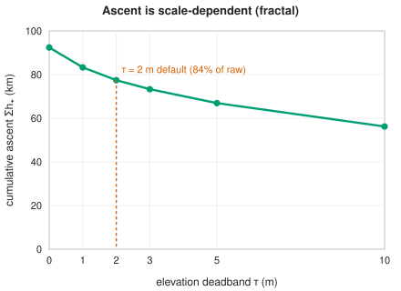
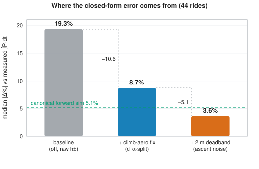
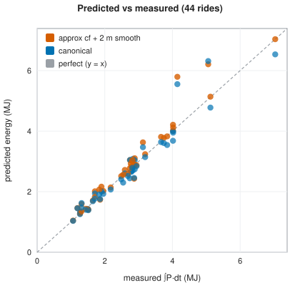
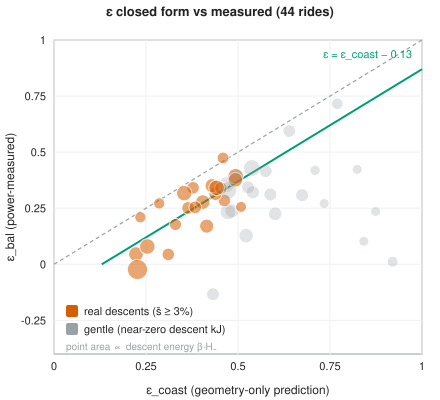
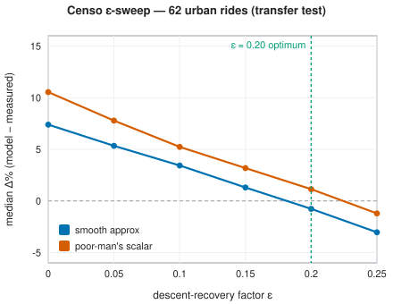
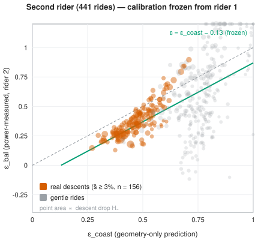
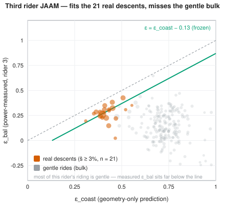
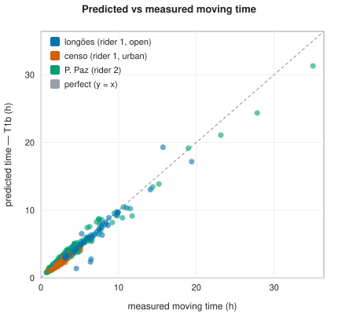

Working paper — Pedal Hidrográfico research notes (v1.0, July 2026). Self-reported benchmarks; not peer-reviewed. Two caveats govern every accuracy figure: (i) both engines are conditioned on each ride’s measured power — the numbers measure consistency of the energy accounting, not blind prediction (§10.4); (ii) the ε calibration is in-sample on rider 1, and its cross-rider margin over a flat constant is rider- and parameter-sensitive (§8.6). Novelty claims are corpus-bounded (§10.3). The full limitation ledger is §10.4.
Danilo Lessa Bernardineli — Pedal Hidrográfico (collective), São Paulo, Brazil — danilo.lessa@gmail.com
Planning community bicycle rides needs one number up front: the
energy of a route, in kJ. We show that the cheap closed form
E ≈ α·x + β·(h₊ − ε·h₋), once two systematic artifacts are
corrected, reproduces measured mechanical energy ∫P·dt to a
3.6% median [95% CI 2.0–5.6] over 44 power-meter rides —
statistical parity with the standard forward-dynamics simulation it
approximates [Martin et al. 1998] (5.1% [3.8–7.1]; the paired per-ride
difference is not significant, §8.1) — at a fraction of the
cost. The two corrections carry almost all of the error: charging climb
aerodynamics at the flat reference speed (fixed by an α-split), and
counting fractal sub-metre ascent noise as real lifting work [Rapaport
2011] (fixed by a ~2 m deadband, or the totals-only scalar
k_smooth = 1 − c·x/h₊, c ≈ 3 m/km). Both
engines run on shared physical constants, so every gap
between them is modelling error, not a parameter mismatch — and every
accuracy figure is conditioned on each ride’s measured power:
consistency of the energy accounting, not blind prediction.
The under-specified term is the descent credit ε ∈ [0,1]
— how much descent potential energy is recovered rather than lost to
excess drag and braking. We give it a coasting-limit closed form,
ε(s) = min(1, α/(β·s)), drop-weighted over the profile with
a calibrated −0.13 offset. Across six datasets and three riders (~1,400
scored rides, two of them independent riders’ full histories tested with
every constant frozen), what transfers robustly is the energy
law (~4–7% median on every corpus) and the offset
itself (measured gaps 0.12–0.13 on all three riders). The
geometric skill beyond a flat constant is fragile: 37% RMS
reduction in-sample; a ~35% win frozen onto a coasting rider under
the generic assumed physics, narrowing to a tie under that rider’s own
fitted constants; a tie-to-failure for a fast descent-pedaller. The
practical rule is simple — ε_geom on open coastable
terrain, flat ε ≈ 0.20 in urban stop-go — and descent
recovery is unambiguously real (ε = 0 over-predicts every
corpus).
Energy has a time twin. Defining an effective flat distance
x* = x + k₊·h₊ − k₋·h₋ makes k₋ the time-image
of ε, and the two are inter-derivable through the shared
descent power — a linkage with no located precedent, whose degenerate
coasting limit independently re-derives ε_coast. Tested
against measured moving time, the ascent half transfers to an unseen
rider (6.6% median vs 7.6% naive) while the descent bridge does not
predict measured descent speed: descents are behaviour-limited, so
k₋, like ε’s residual, is set by how the rider
descends, not by geometry.
Deployment adds a final, structural finding: the law’s
behavioural constants are scale-dependent. On
the deployed 5 m survey DEM the frozen law over-charges energy by +3.6
to +9.4 pp relative to a 30 m regime (922 rides); re-fitting the
constant trio (k_smooth, the ε offset, the climb threshold)
as a pure resolution transfer — never touching measured energy — bridges
that gap on the terrain regime it was fitted on, with each constant
moving exactly as its mechanism predicts, but not across regimes: the
constants are functions of (sampling interval, terrain), not
universals (§8.9). With a light σ = 10 m raster pre-smoothing plus
per-rider effective constants calibrated on each rider’s own history,
the deployed pipeline meets a pre-registered ±5% error / ±2%
bias goal on held-out rides for all three riders — the
calibration, not the smoothing, is the lever. Both engines and the
shared law are deployed in three open, local-first tools (sampasimu,
amora, quilojaules).
A self-organised cycling collective in São Paulo plans rides by
following the city’s buried hydrography — “seguir as
águas” — tracing the creeks and relief the city paved over.
Planning these community rides needs one number up front: the
energy of a route, in kilojoules — and it is worth being
precise about what that number is for. First, energy converts
to duration. The collective aims to be accessible to
every rider power profile, so planning defaults to a deliberately low
reference output (≈ 50 W average): with the reference power fixed, time
is the degree of freedom, and duration ≈ E/P̄ turns a
route’s kJ into an arrival estimate (§5 sharpens this into the
effective-flat-distance time model). Rides must be bounded in time —
people have trains to catch — so computing the energy of novel, unridden
routes is what makes their duration predictable at all. Second, energy
is deliberately not a difficulty score: how easy or
punishing a ride feels is intensity × duration, which varies
per rider; energy states the route’s demand on the body — a reference
point, not a claim about how challenging it is. The constraint is
practical: the tooling is open-data and local-first, built to run in a
browser or on a self-hosted box with no build step and no cloud lock-in,
which rules out heavy per-route computation as the default planning
primitive.
There are two ways to put a kJ number on a route. The canonical way is a forward-dynamics simulation: integrate the longitudinal force balance [Martin et al. 1998],
m·dv/ds = k_eff·P/v − C_rr·m·g·cosθ − ½·ρ·C_dA·(v + wind)² − m·g·sinθ,regime by regime, with a brake/safe-speed cap on descents. It is
accurate (here, 5.1% median absolute error against measured
∫P·dt over 44 rides) but stiff, opaque, and needs a speed
solver per segment — poorly suited to interactive planning over many
candidate routes or to per-edge field computation over a DEM. The
approximate way is a closed-form steady-speed energy
integral,
E ≈ α·x + β·(h₊ − ε·h₋),
α = (C_rr·m·g + ½·ρ·C_dA·(v_f + wind)²)/k_eff,
β = m·g/k_eff,linear in distance x, ascent h₊ and descent
h₋. Its α·x + β·h₊ skeleton is a textbook
result; the decisive — and under-specified — term is the descent credit
ε·h₋. The recovery factor ε ∈ [0,1] lumps the
descent-specific losses that α (charged at the flat
reference speed v_f) does not carry: the excess aerodynamic
drag of descending faster than v_f, plus braking. In the
nearest road-cycling-power and elevation-routing literature we find no
validated, route-level, closed-form expression for such a
lumped ε: the idle/coasting boundary appears as a per-grade
steady-state speed condition [Bigazzi & Lindsey 2019], and EV/e-bike
energy routing treats descent recovery as a per-instant regeneration
efficiency or a symmetric m·g·Δh potential, never as a
calibrated ε < 1 folded into a closed-form route
law.
This paper closes that gap and draws out a structural consequence. We
give ε a closed form in the coasting limit
(E_legs = 0), where it collapses to a function of grade
alone,
ε_coast(s) = min(1, α/(β·s)), α/β = C_rr + ½·ρ·C_dA·(v_f + w)²/(m·g),with α/β the flat-resistance grade — the slope
whose gravity exactly balances flat rolling-plus-aero resistance.
Aggregated drop-weighted over a profile and calibrated with a
near-constant −0.13 offset, this geometry-only estimate,
ε ≈ clamp₀₁(ε_coast − 0.13), cuts the RMS error against a
power-measured descent-energy-balance ε by 37% relative to
the best flat constant on real descents (in-sample; §8.3). Crucially, we
run the closed form and the simulation on the same physical
constants (m, C_rr, C_dA, ρ, k_eff, wind), so the residual
gap between them is attributable to the modelling simplifications,
not the parameters.
We then observe that energy has a time twin. Time is
not E/P (degenerate on a coast), so it needs its own model;
defining an effective flat distance
x* = x + k₊·h₊ − k₋·h₋ and reading time off the flat speed
(t = x*/v_f) reproduces the same structure as the energy
law term-for-term. The ascent coefficient
k₊ = v_f·β/P_climb is clean and grade-independent — the
equivalent-flat-distance idea with cycling precedent [Scarf & Grehan
2005; Scarf 2007] — while the descent coefficient k₋ is a
lumped, free parameter playing exactly the role ε plays for
energy, with descent-time-credit precedent [Langmuir 1984; Tobler 1993].
Each half has precedent in isolation; what has no located precedent in
the nearest corpus is the linkage: ε and
k₋ both encode the same hidden descent speed
v_desc and become inter-derivable through the descent power
P̄_desc,
k₋ = (1/s)·[1 − (v_f/P̄_desc)·(α − ε·β·s)].ε, assessed against measured power. A single
lumped ε ∈ [0,1] inside
E ≈ α·x + β·(h₊ − ε·h₋), with its coasting-limit closed
form ε(s) = min(1, α/(β·s)), drop-weighted aggregate, and
calibrated −0.13 offset. No precedent for such a lumped, closed-form
ε was located in the nearest cycling-power,
elevation-routing, or EV/e-bike energy corpus.ε: a 37% RMS reduction over the best flat constant
on real descents (s̄ ≥ 3%, n = 22; in-sample, §8.3). Frozen and tested on
two further independent riders (§8.6): the −0.13 offset recurs on both
(gaps 0.12, 0.13), but the geometric skill beyond a flat constant is
fragile — a ~35% win for a coasting rider under the
generic assumed physics that narrows to a tie under that rider’s own
fitted constants (§8.6), and inconclusive-to-failing for a fast
descent-pedaller. What transfers robustly across all three riders is the
energy law and the offset; the ε geometry adds little beyond a flat
constant for either independent rider.x* = x + k₊·h₊ − k₋·h₋ whose descent coefficient
k₋ is the time-twin of ε, made inter-derivable
through the shared descent power P̄_desc. Both halves have
prior art individually; the derivation of k₋ from the
same descent power as ε is, to our knowledge, new.
Tested against measured moving time on all three datasets (§8.8): the
ascent half transfers out-of-sample (6.6% median vs
7.6% naive on the second rider, significant, and beating a
fitted-coefficient ceiling), while the descent bridge does not
predict measured descent speed — k₋ stays a free,
behaviour-limited coefficient.k_smooth correction for fractal cumulative
ascent inside the closed-form law. Because measured ascent is
scale-dependent [Rapaport 2011], raw h₊ over-counts energy
through sub-metre noise and short rollers; a per-segment ~2 m deadband
(or the totals-only scalar k_smooth = 1 − c·x/h₊,
c ≈ 3 m/km) removes that part while leaving sustained
climbs at full strength (k_h = 1).∫P·dt to a 3.6% median
(best closed-form variant) over 44 power-meter rides, to ~4–7% median
over 62 urban São Paulo rides with a generic assumed rider, and to ~4–5%
median over each of two further independent riders’ histories (441 + 219
rides) with only the mass data-implied (§8.6) — with explicit
physical-floor (E_legs ≥ m·g·h₊/k_eff) and cadence
data-quality filters, and a documented São Paulo negative result (urban
stop-go riding makes ε behave as an approximate constant
rather than tracking braking density).k_DEM (a
parameter-error result, not a headline modelling claim) quantifying how
the choice of elevation source biases the closed-form law’s
h₊/h₋ inputs.k_smooth, the ε offset, the climb threshold) are
functions of the elevation-sampling interval and terrain regime: the
frozen law over-charges on a 5 m survey DEM (+3.6…+9.4 pp vs a 30 m
regime, 922 rides), and a rider-independent re-fit of the trio at 5 m —
fitted purely as a resolution transfer, never against measured energy —
bridges the gap on the fitted terrain regime, each constant moving as
its mechanism predicts (§8.9). On top of a σ = 10 m raster
pre-smoothing, per-rider effective constants calibrated on half of each
rider’s history meet ±5% median error / ±2% bias on the held-out
half, for all three riders — and the ablations show the
calibration, not the smoothing, carries the goal.Our two-engine design and its closed-form half draw on five distinct strands of prior art: the standard force-balance power model, equivalent-flat-distance time models, descent time-credits, the fractal nature of cumulative ascent, and energy-aware routing with recuperation. We organize the review by theme, naming the canonical reference for each and stating precisely what is standard and what we add. Every “no located precedent” claim below is corpus-bounded; the full caveat is stated once in §11.3.
The instantaneous mechanical power required to ride a bicycle is, by
now, textbook. The canonical statement is the validated force-balance
model of [Martin et al. 1998], which sums rolling resistance,
aerodynamic drag, gravity, a changing-kinetic-energy term, wheel-bearing
friction, and a tyre/road term, and which was validated against direct
power measurement on a flat taxiway to R² = 0.97 (SE 2.7 W), with a
wind-tunnel drag area of CdA = 0.269 ± 0.006 m² for racing drops. The
same balance underlies the cyclist “equation of motion” of [di Prampero
et al. 1979] and is the model adopted by the modern simulation
literature: [Dahmen & Saupe 2011] integrate it with
ode45 and validate the speed prediction on real rural
tracks (explicitly excluding steep descents and braking); [Danek et
al. 2020] estimate its parameters from power data; and [Li et al. 2025]
optimize race pacing on a Martin-1998 power model with a genetic
algorithm.
Our canonical() engine is this model — the
distance-marching longitudinal force balance
integrated with a semi-implicit kinetic-energy update, a
brake/safe-speed cap, and an enforced conservation identity
k_eff·legE = ΔKE + W_rr + W_aero + W_grav + W_brake. We
claim nothing new about the physics here. What we add is operational: a
clean, open, no-build reference implementation, and its use as the
control arm of a shared-constants comparison (§4). One point
stated precisely: [Martin et al. 1998] make small-angle simplifications
inside this instantaneous-power model but never publish a
route-level energy closed form; the closed form of §4–5 is our own
derivation, not something the 1998 paper licenses.
Integrating the force balance at steady speed over a segment gives
the energy skeleton E ≈ α·x + β·h₊, where α
collects rolling-plus-aero cost per horizontal metre and
β = m·g/k_eff is the cost per metre climbed. That skeleton
is standard — it is the textbook steady-speed energy integral, and we do
not claim it.
What has no located precedent in the closest road-cycling-power and elevation-routing literature is the lumped, route-level descent-recovery factor ε ∈ [0,1] and its closed form. We write
with ε a single scalar lumping the descent-specific losses (excess
aero above flat speed, plus braking) that α — charged at
flat speed v_f — does not carry, and we give it a
geometry-only closed form in the coasting limit,
drop-weighted over the descent profile and corrected by a
near-constant offset, ε ≈ clamp[0,1](ε_coast − 0.13).
The nearest located precedent for the idle/coasting boundary
is [Bigazzi & Lindsey 2019], whose negative-grade condition
v² ≤ μ₁/(−μ₃) zeroes tractive power on gentle descents —
but they apply it to per-grade steady-state speed choice, never
to a route-level closed-form recovery factor. The structural cousin in
energy-optimal EV routing, [Ahmadi et al. 2024], uses a symmetric,
path-independent gravitational potential (M+m)·g·ΔH —
recovery is total and ε-free, not a calibrated
ε < 1. Across the EV/e-bike and operations-research
routing literature, downhill recovery is always either a
per-instant/per-speed-range regeneration efficiency [Yuan et al. 2024],
a symmetric mgΔh potential, or per-edge negative arc costs
solved numerically [Perger & Auer 2020]; none is a lumped
route-level closed-form factor in [0,1]. (We note
explicitly that ε is not the eccentric/concentric
muscle-efficiency asymmetry of [Minetti et al. 2002]: ε is the cyclist’s
gravity-and-brake budget, not a physiological efficiency. We invoke
Minetti only as a conceptual analogy.)
The idea of converting climbing into an equivalent length of flat riding is old in the route-choice and hiking literatures. [Scarf & Grehan 2005] give a cycling “equivalent distance” in which 1 m of climb costs roughly 8 m of flat; [Scarf 2007] refines the cycling Naismith rule to 1 m of ascent ≈ 7.92 m horizontal; and [Norman 2004] gives analogous uphill-running equivalences. Our effective-flat-distance time model
extends — and does not invent — this equivalent-flat-distance idea
for the ascent half: k₊ converts climb to flat time and is,
like Naismith, grade-independent on steep climbs (on a climb almost all
power goes into lifting, so dt = m·g·dh/(k_eff·P_climb)
depends on vertical gain, not road length).
The descent half of x* has its own precedent. [Langmuir
1984] corrects Naismith’s rule with a descent term that credits
gentle descents (−10 min per 300 m on slopes of 5–12°) but
penalizes steep ones (+10 min per 300 m above 12°); [Tobler
1993] gives the hiking speed function
V = 6·e^(−3.5·|S+0.05|), whose maximum is at a downgrade of
−2.86°, so gentle descents are faster than flat. These are the
route-level descent time-credit precedents for our lumped
k₋. As a time concept, k₋ is therefore not
new, and we say so: Langmuir’s gentle-credit/steep-penalty split is the
same asymmetry that our ε and brake-cap encode on the energy
side.
The genuinely additive piece is the linkage, not
either half on its own. [Langmuir 1984] and [Tobler 1993] are empirical
time fits never tied to an energy budget. We instead derive the
descent time-credit k₋ and the energy recovery factor ε
from the same descent power P̄_desc: both encode
the same hidden descent speed v_desc, and equating the
time-side (v_desc = v_f/(1−k₋·s)) and energy-side
(v_desc = P̄_desc/(α−ε·β·s)) expressions yields the single
relation tying them together. To our knowledge, no prior work derives
the descent time-credit from the same descent power as the recovery
factor; this energy↔︎time duality (§5) is the novel
contribution of the time model. We test it empirically in §8.8: the
ascent half transfers to a second rider’s measured times, but the
descent bridge does not predict measured descent speed, so the duality
stands as a structural claim more than a quantitative descent
predictor.
Total ascent h₊ is not a well-defined number until a
scale is fixed: the finer the elevation sampling, the more sub-metre
wiggle it accumulates. [Rapaport 2011] makes this precise, showing
cumulative ascent is scale-dependent (a Mandelbrot-style fractal
measurement problem) and stating the roller-momentum intuition — that a
rider coasting over a short bump does not “pay” its full ascent — in
words, but only as a qualitative caveat, with no deadband and no
energy-law correction. We formalize that caveat inside the closed-form
law (§6): a per-segment deadband (≈ 2 m) on the profile, or, with totals
only, the scalar k_smooth = 1 − c·x/h₊ with
c ≈ 0.003 (= 3 m/km, a dimensionless “noise grade”).
Folding k_smooth into the energy law to discount
fractal-noise ascent without touching sustained climbs has, to our
knowledge, no precedent; the canonical sim needs no such factor because
it tracks kinetic energy and already pays roller momentum correctly.
Two further strands frame our methods. First, recovering a hidden
physical quantity by inverting an energy identity is exactly the logic
of [Chung]’s “virtual elevation” method for estimating CdA from a power
meter; our epsFromFIT (which recovers ε from a measured
descent energy balance) and our k_DEM ascent-source
corrections are Chung-adjacent — the inversion method is standard, only
the inferred targets (the recovery factor; per-DEM ascent bias) are new.
Second, in energy-aware electric-vehicle and e-bike routing, downhill
recuperation is modelled explicitly: [Perger & Auer 2020]
route EVs with regenerated (negative) edge energies, [Yuan et al. 2024]
combine a symmetric mgΔh term with a per-instant
regeneration efficiency, and the validation closest to ours on real,
non-racing rides — [Gebhard et al. 2016], on WeBike e-bikes over
OSM — predicts battery range, not mechanical
∫P·dt. The contrast with these is the same throughout:
their recovery is per-instant or symmetric and (in the OR work) solved
numerically per edge, where ours is a single lumped closed-form factor
validated against measured mechanical energy.
We model the mechanical energy of a ride twice, with two engines of deliberately different cost and fidelity, and run both on the same physical constants. The expensive engine is a forward-dynamics simulation of the standard road-cycling power balance [Martin et al. 1998]; the cheap one is a closed-form law that integrates that balance under a small set of simplifications. Because the two share every constant, the gap between them is attributable to the modelling simplifications, not the parameters — the central experimental control of this work.
The canonical engine, canonical(), integrates the
longitudinal force balance of [Martin et al. 1998] by marching in
distance s along the elevation profile:
with the per-segment grade taken from the profile
(slope = dh/dx, cosθ = 1/√(1+slope²),
sinθ = slope/√(1+slope²)), and aero acting on the air speed
v + w (signed, as rel·|rel|). Pedal power is
regime-selected per segment by local grade —
P = P_climb where slope ≥ +2%,
P = P_descent where slope ≤ −1.5%, else
P = P_flat. A safe-speed brake cap limits v to
v_max; on descents the kinetic energy in excess of the cap
is dumped to a brake-work term W_brake. The default
thresholds are v_max = 38 km/h,
v_start = 15 km/h, with the integrator on a
dx = 5 m grid and adaptive sub-steps
(dt ≤ 0.25 s, ds ≥ 0.2 m).
The kinetic-energy update is semi-implicit: the
stiff propulsion term k_eff·P/v is evaluated at the
new speed by a safeguarded Newton iteration (with bisection
bracketing) on
This is energy-conservative at any step and never injects
energy, so the predicted leg energy can never fall below the
work actually done. The engine returns the leg energy
legE = ∫P·dt (its predicted mechanical energy), elapsed
time, the full speed profile, and the wheel-work breakdown
W_rr, W_aero, W_grav, W_brake, ΔKE. These satisfy the
enforced conservation identity
which holds to 1e-6 relative error and is used as the
engine self-check. On a pure climb it guarantees
legE ≥ m g·h₊/k_eff — leg energy never less than the
potential energy lifted. Critically, there is no VMIN/KE
floor: such a floor would inject energy and break this
inequality on underpowered steep climbs. The canonical engine tracks
kinetic energy directly, so it pays the momentum cost of short rollers
correctly and needs no elevation smoothing.
The approximate engine, approximate(), evaluates a
closed-form integral of the same balance. In its simplest (v1) form,
with horizontal distance x, total ascent
h₊, total descent h₋, and
Here α is energy per horizontal metre (rolling + aero,
charged at the flat reference speed v_f), β is
energy per vertical metre, and ε ∈ [0,1] is the lumped
descent-recovery factor developed in §5. A per-edge clamp
max(0, α·dx − ε·β·|dh|) on descent segments prevents
negative segment energy. The leg energy is
E_leg = E_wheel/k_eff (the legs supply more than
the wheel receives; α, β above are already wheel-side
quantities).
The current (v2) form refines this with three corrections, each of which removes a systematic bias measured against the power-meter rides:
(i) α split — charge aero only off the climbs. The
rolling term is exact on any grade
(C_rr m g cosθ·s = C_rr m g·x), but the aero term, billed
at v_f over the whole distance, over-charges
climbs where the rider actually moves far slower
(aero ∝ v²). We split α = α_r + α_a and apply
aero only over the non-climbing fraction:
with x₊ the horizontal distance on climbing segments
(slope ≥ the climb threshold). The headline runs zero climb
aero (climbAeroMode = 'zero'; 'off' is the
full-aero baseline); a near-exact variant instead charges it at the
quasi-steady climb speed
v_c ≈ k_eff·P_climb/(C_rr m g cosθ + m g sinθ), capped at
v_f. Descent aero is left untouched — on descents it is
paid by gravity and already sits inside (1−ε)·β·h₋;
down-weighting it there would double-count. Empirically this correction
cuts the median |Δ%| from 19.3% (baseline off) to 8.7% over
the 44 power rides, beating off on 43/44 rides (median
climb fraction 21%); the per-regime details are reported in §8.1.
(ii) k_h = 1 — gravity is paid in full on real
climbs. A direct fit of the gravity coefficient on sustained
climbs gives k_h ≈ 1 (validated in §8.2): on real climbing
β·h₊ is correct and there is no uniform gravity
discount.
(iii) k_smooth — trim only the rollers and DEM
noise. What makes raw h₊ over-count E
is not sustained climbing but short rollers and sub-metre elevation
jitter. The right correction is therefore an ascent-smoothing
factor k_smooth ∈ (0,1] that trims those while leaving
sustained climbs intact; it is developed in full in §6.
k_smooth applies to the approximate model
only — the canonical sim already pays the rollers’ momentum
through its kinetic-energy term.
Both engines read the same physical constants —
m, C_rr, C_dA, ρ, k_eff, wind, plus the regime/grade
thresholds — and the two are never allowed to diverge on any of them.
This is the experimental control. If both engines used independently
tuned parameters, a small gap between their predictions could be either
a modelling artefact or a parameter mismatch, and the two would be
inseparable. Holding the constants fixed makes the gap
unambiguously the modelling simplification: the closed form’s
assumption of a single flat reference speed, its lumped descent recovery
ε, and its linear treatment of h₊, set against
the forward sim’s explicit momentum and brake accounting.
Running two different engines on the same constants to isolate the modelling-simplification gap (rather than least-squares-calibrating one shared model to isolate parameter error, as in [Dahmen & Saupe 2011]) was not found in the nearest prior art; we frame it as an additive methodological contribution.
The comparison is anchored at a known calibration point. On flat
ground the two engines coincide iff v_f equals the
flat-equilibrium speed at the flat power,
i.e. v_f = flatEqSpeed(P_flat), where
flatEqSpeed(P) solves the flat balance
(C_rr m g + ½ρ C_dA(v+w)²)·v = k_eff·P by bisection (this
is what “auto v_f” sets). With the engines pinned to agree
on the flat, every divergence elsewhere — most prominently the uphill
aero over-charge corrected by the α-split above — is the
genuine modelling story rather than a calibration accident.
The factor ε ∈ [0,1] is the single lumped parameter that the closed-form law carries that the canonical simulation does not. It absorbs all descent-specific losses that the rolling-and-aero term α — charged at the flat reference speed v_f — does not account for: the excess aerodynamic drag incurred by descending faster than v_f, plus braking. For a descent of grade s, the local recovery is the fraction of that descent’s released potential energy β h₋ that is not wasted:
Equivalently, from the segment energy balance (neglecting the kinetic term, which telescopes over a rest-to-rest ride),
i.e. the leg energy a descent saves relative to riding the same horizontal distance dx on the flat, expressed as a fraction of the released potential energy β h₋.
Because ε enters the model only through the total descent credit ε β H₋ (with ), a single per-ride ε is unambiguously fixed as the descent-drop-weighted average of the local ε(s):
The weight is the vertical drop h₋ — not horizontal distance, and not time. Summed over a ride this reduces to the directly measurable form
with
,
and
the horizontal distance, leg energy and drop summed over descent
segments. This is the quantity recovered from a power track by
epsFromFIT() on 30 m descent cells; critically, the α used
there takes the measured flat ground speed (the time-weighted
mean ground speed on |grade| < 1% cells), not the model’s
flat-equilibrium speed, so that a parameter mismatch (e.g. road C_rr
applied to a gravel ride) cannot inflate α and misreport ε.
This lumped, route-level, closed-form ε ∈ [0,1] is the paper’s first main claim; §2.2 locates it against the nearest prior art — Bigazzi & Lindsey’s per-grade idle boundary, and the per-instant, symmetric, or per-edge-numerical treatments of recovery in EV/e-bike routing.
The leg energy on a descent is bounded — , hence . Setting (a pure coast) collapses ε(s) to a function of grade alone:
The ratio α/β is the flat-resistance grade — the slope whose gravity exactly balances flat rolling-plus-aero resistance. The clamp at 1 is the gentle-descent case . Drop-weighted over the profile, or from totals only:
This is the geometry-only planning estimate epsGeom():
it needs no power track, only the route’s grade profile and the rider
constants. We test it, derive the −0.13 offset, and assess the resulting
estimator in §8.3 (a 37% RMS reduction over the best flat constant on
real descents), calibrating to
This inference machinery — inverting an energy identity to recover a hidden quantity from a power track — is methodologically Chung’s virtual-elevation move [Chung], applied here to a new target (the recovery factor rather than CdA).
The naïve route is degenerate on a descent: both E → 0 and P → 0, so the quotient is ill-defined. Time is fundamentally and needs a model of its own. We define an effective flat distance x* and read time off the flat reference speed, :
The structure deliberately mirrors the energy law — a horizontal baseline, a “clean” ascent term, and a “lumped” descent term — and the parallel is exact.
On a climb almost all power goes into lifting, , so — climb time depends on vertical gain, not road length. Hence
(A constant slightly double-counts the horizontal baseline already in x on gentle climbs; the exact coefficient is , but the term vanishes on steep climbs.)
This ascent half is not novel. It is the cycling instance of the equivalent-flat-distance idea: Naismith-type rules that convert a metre of climb into a fixed number of flat metres — [Scarf & Grehan 2005] (cycling “equivalent distance”, 1 m climb ≈ 8 m flat), [Scarf 2007] (1 m ascent ≈ 7.92 m horizontal), and the uphill-running equivalences of [Norman 2004]. We frame x* as extending that idea, not inventing it.
Descent time is speed-limited, not lift-limited: . Pinning it instead to the drop h₋ forces to absorb the typical descent grade,
so
is a lumped parameter — playing for time exactly the
role ε plays for energy. We now test the time model against measured
ride times (§8.8, an empirical leg absent from earlier drafts): the
ascent half transfers, but k₋ stays effectively
free and corpus-dependent because the descent bridge
below does not, empirically, pin it. The term-for-term correspondence is
the structural heart of the duality:
| clean term | lumped term | |
|---|---|---|
| energy | ||
| time |
With , the average power then behaves correctly everywhere — it goes to 0 on a coasting descent (where was degenerate) and recovers exactly the flat power on the flat.
The descent half, as a time concept, is also not novel: route-level descent time-credits are established in the hiking literature — [Langmuir 1984] (−10 min/300 m on gentle descents 5–12°, +10 min/300 m on steep > 12°) and [Tobler 1993] (, speed peaking at −2.86°, so gentle descents are faster than flat). Langmuir’s gentle-credit/steep-penalty split is the same asymmetry that ε and the canonical brake-cap encode on the energy side.
What has no located precedent is the linkage. ε (the energy-side lumped parameter) and k₋ (its time-side counterpart) are not derivable from one another in isolation, but they become so through the descent power — power being the exchange rate between energy and time. Both encode the same hidden descent speed .
From the time side, the descent’s effective distance must take real time :
From the energy side, the model descent leg-energy per horizontal metre is , and average power is energy × speed:
Equating the two expressions for gives the single bridge relation
and hence, given and grade s, each lumped parameter in terms of the other:
The degenerate case is instructive. Set (a pure coast): the bridge forces , i.e. — pinned by grade alone, independent of speed, recovering exactly the coasting-limit ε_coast of §4.2 — while , and hence , is set entirely by the terminal coasting speed. With no power to bridge them, the two decouple: ε becomes purely geometric, purely aerodynamic. They are inter-derivable only once the legs do measurable work on the descent.
In short: both halves of x* have precedent (§5.2, §5.3), but no prior
work we located derives the descent time-credit k₋ from the same
descent power
that fixes the recovery factor ε. The duality is the paper’s second
structural contribution — and we are precise about what kind of claim it
is. It is a derivation, with one falsifiable
quantitative prediction (the bridge’s descent speed), which we test in
§8.8 and find wanting: real descents are behaviour- and brake-limited,
not equilibrium-limited, so k₋ stays empirical. What
survives is structural: the term-for-term correspondence organizes both
models, and the degenerate coasting limit independently
re-derives the ε_coast of §4.2 from the time side — an internal
consistency check the energy derivation did not have to pass.
k_smooth
deadbandTotal ascent h₊ — the quantity the gravity term
β·h₊ charges against — is not a well-defined property of a
route but a property of the route as measured. Cumulative
ascent grows as the sampling/elevation resolution increases: every finer
subdivision resolves additional undulation, so Σh₊ behaves
like the length of a fractal coastline rather than a fixed integral.
This scale-dependence of mountain-biking cumulative ascent is the
subject of [Rapaport 2011], which also states in words the
roller-momentum intuition — that a rider carries kinetic energy over
short bumps and does not pay the full mg·Δh on each — but
only as a qualitative caveat, with no deadband and no energy-law
correction.
The effect is large in our data. Over the 44 power rides, total engine ascent shrinks monotonically with the hysteresis threshold applied to the profile:
| smoothing | Σ h₊ (km) | % of raw |
|---|---|---|
| raw | 92.4 | 100% |
| 1 m | 83.3 | 90% |
| 2 m | 77.4 | 84% |
| 3 m | 73.3 | 79% |
| 5 m | 66.9 | 72% |
About 20% of raw h₊ is sub-3 m jitter,
much of it the 0.2 m altitude quantization of consumer GPS/baro tracks.
In energy terms this is not a rounding detail: β·h₊ falls
from 69 039 kJ (raw) to 54 758 kJ at a
3 m threshold, and that 14 282 kJ difference is
25% of the empirical climb energy and accounts for
≈ 93% of the closed-form model’s climb over-prediction
in the baseline run.

Figure 3. Cumulative ascent Σh₊ summed over the 44 rides shrinks monotonically as the deadband threshold τ rises — the coastline-paradox signature of a fractal measurement. The chosen τ = 2 m default keeps 84% of raw ascent, trimming mostly sub-metre jitter.
k_h = 1: the discount is in the ascent, not the gravity
coefficientA natural but wrong fix is to discount the gravity coefficient itself
— to ride with some k_h < 1 multiplying
β·h₊. We reject this. Fitting k_h on
sustained climbs only (mean slope > 3%
over > 100 m, 2535 sections across the
44 rides) shows the rider pays the full gravitational cost
there: measured ∫P·dt on climbs equals the expected gravity
+ rolling + aero to within 3% (k_h(sustained) = 0.96,
per-ride median 1.02; full numbers in §8.2). So on real climbing
k_h ≈ 1: β·h₊ is correct and there is no
uniform discount. Sustained climbs are only 54% of total ascent; the
other 46% is rollers, gentle grade and noise — and that is what
raw h₊ over-counts. An earlier uniform scalar of 0.56
conflated the two effects and was an artefact. We therefore fix
k_h = 1 and move all correction into the separate
ascent-smoothing factor k_smooth ∈ (0,1]:
k_smooth applies to the approximate model
only: the canonical forward simulation already tracks kinetic
energy, so it pays the rollers’ momentum correctly and needs no
smoothing.
k_smooth(i) The correct realisation — a per-segment
deadband. A backlash/deadband filter
smoothElevation(τ) with τ ≈ 2 m on the
elevation profile keeps a 100 m climb at full strength and trims
sub-τ undulation; then h± are the smoothed
sums and k_smooth = 1. As a scalar this is equivalent
to
which is also the value k_smooth takes for FABDEM /
IGC-SP 2010 elevation.
(ii) The totals-only scalar (the “poor-man’s” form).
When only route totals (x, h₊) are available,
the cheapest estimate exploits the fact that spurious ascent accumulates
with distance, not terrain — a roughly constant “noise grade”
the DEM or track adds:
Here x and h₊ are both in metres (as in
α·x), so c is dimensionless —
a ≈ 0.3% noise grade. The measured value is 3.2 m/km (IQR
2.7–3.8), and should be calibrated per elevation source. The
form auto-adapts to terrain: k_smooth ≈ 0.89 on a flat ride
(h₊/x ≈ 30 m/km) and ≈ 0.98 on a hilly one
(≈ 150 m/km). The same correction is applied to
h₋.
Both realisations recover energy comparably against the empirical
∫P·dt; the real 2 m deadband (k_smooth = 1) is
the single most accurate variant, while the totals-only scalar is
unbiased but carries roughly twice the scatter — the price of having
only totals rather than the profile (scoreboard in §8.1, cross-check in
§8.2). We did not find k_smooth = 1 − c·x/h₊ folded
inside a closed-form energy law anywhere in the cycling-power
or elevation-routing literature; [Rapaport 2011] supplies the
scale-dependence diagnosis but not the correction.
One consequence of the fractal diagnosis deserves flagging here and
is developed in §8.9: because h₊ is scale-dependent,
any constant calibrated against it — k_smooth
itself, but also the ε offset and the climb threshold — carries an
implicit sampling interval. The constants in this paper are calibrated
at an effective ~30 m scale; §8.9 shows that re-fitting
k_smooth at a 5 m sampling recovers almost exactly the
measured h₊(30 m)/h₊(5 m) ratio, making the
scale-dependence explicit and quantitative.
∫P·dtThe ground truth for every ride is its measured mechanical
energy ∫P·dt, computed directly from the
power-meter FIT track as a time-weighted sum Σ power·dt
over records. This is the quantity both engines are scored against; we
do not use any pre-computed energy column from the source
spreadsheets. (As a sanity check on the longões set, the FIT-integrated
∫P·dt agrees with the catalogue’s “Work Bike” column to
≈ 0.3% median.) All scoring is reported as the median
signed and absolute percent error of each model’s predicted energy
relative to this benchmark, with the convention
Δ% = (model − empirical)/empirical. Headline medians carry
bootstrap 95% confidence intervals (percentile method,
10⁴ resamples over rides) computed from the per-ride harness outputs,
and head-to-head model comparisons on the same rides use the exact
two-sided paired sign test — a median gap between two
models is claimed only where the paired test supports it.
Feature extraction is shared across both datasets. The profile
(buildProfile()) builds cumulative horizontal distance by
haversine plus elevation at native resolution for the integrator and the
h₊/h₋ sums; near-duplicate points
(Δdist < 0.5 m) are dropped so no segment has
dx = 0, and missing elevations are linearly gap-filled. The
engine grid is dx = 5 m. Regime powers
(extractRegimePowers()) bin each FIT record into
climb/flat/descent by its grade over a 30 m distance
window (the raw per-record grade is unusable: 0.2 m altitude
quantization over ~5 m/record quantizes grade to ~4%); samples below 0.5
km/h are skipped as stopped, and each regime power is the time-weighted
mean. Regime thresholds throughout are climb ≥ +2%, descent
≤ −1.5%.
Dataset 1 — Longões (44 power rides). Of 52
catalogued rides, 44 have measured power plus a GPS
track (the remaining 8 are 6 pre-power-meter 2020 Strava rides
and 2 planned routes). These are long, varied rides spanning flat,
sustained-climb and real-descent terrain. For each ride the
real approximate() and canonical()
engines run on that ride’s own parameters and track,
putting closed-form approx (and its per-edge clamp), canonical
legE, and empirical Σ power·dt side by side.
The wiring mirrors the application’s recompute() defaults:
engineDx = 5 m, time-weighted-mean regime powers,
climbAeroMode = 'off', auto
v_f = flatEqSpeed(P_flat), v_max = 38 km/h,
v_start = 15 km/h, deadband τ = 2 m. This
dataset carries its own measured parameters, so it isolates the
modelling gap with no assumed rider.
Dataset 2 — Censo Hidrográfico (62 clean urban
rides). Short urban São Paulo social rides drawn from the censo
spreadsheet’s activity links (columns Ativ. Strava / Ativ.
RWGPS, RWGPS preferred). The download funnel is
87 links → 70 downloadable (16 are other riders’
un-exportable Strava) → 69 with power → 62 after a
physical-plausibility cut. These rides are hilly but stop-go,
with medians of 33 km, 454 m climb, 16.5 km/h, ~14
m·km⁻¹. Every factual quantity is derived from the
downloaded activity (geometry, FIT-extracted regime powers,
v_f, ∫P·dt); only the rider physics is
assumed, and identically for every ride:
m = 78 kg,C_dA = 0.40,C_rr = 0.008(100% paved),ρ = 1.13 kg/m³(São Paulo, ~760 m, ~22 °C),wind = 0,k_eff = 0.98.
Crucially, the closed form’s two calibrated constants — the ε offset −0.13 (§8.3) and the noise grade c = 3 m/km (§6.3) — are fit on Dataset 1 only and applied to this dataset frozen. The censo set is therefore not just a different riding regime: it is an out-of-sample transfer test for both constants.
For each clean ride the canonical engine is fed the ride’s own
climb/flat/descent powers, and two closed-form variants are compared to
measured ∫P·dt: a smooth approx on a 2 m
deadband-smoothed profile, and a poor-man’s variant on
the raw profile with gravity scaled by
k_smooth = 1 − 0.003·x/h₊. The recovery factor
ε is swept over the geometric ε_geom and the
constant grid {0.00, 0.10, 0.15, 0.20, 0.25} (the
underlying code also evaluates ε = 0.05, which never sets a
reported floor). One deliberate asymmetry: in the censo comparison the
closed-form v_f is the model
flatEqSpeed(P_flat), whereas the descent-balance
ε “truth” (epsFromFIT) uses the
measured flat speed, so that a parameter mismatch cannot
inflate α and misreport ε. The
braking-mechanism analysis of §8.5 is run on the 59 of these 62 rides
that also carry a usable per-ride descent-balance ε.
Dataset 3 — DEM comparison (12 rides, SP tile
S24W047). To quantify how the elevation source biases
the closed form’s h₊/h₋ inputs (a
parameter-error, not a modelling, question), 12 rides falling inside São
Paulo tile S24W047 are sampled against five elevation sources — the
recorded barometric track, the IGC-SP 2010 5 m bare-earth DTM (which
covers 10 of the 12 rides and is taken as survey truth), FABDEM 30 m
(bare-earth), and the COP30 and SRTM 30 m surface models — at a 3 m
hysteresis with bilinear along-track sampling. Results are in §8.7.
Dataset 4 — Second rider (441 power rides, P. Paz).
An independent rider — not a member of the Pedal Hidrográfico
collective — a faster, open-road rider, shared their full
Strava history export (2023-10 → 2026-07; shared with consent, held
locally, never published). Of 1 054 FIT activities, 753 rides
carry power; the harness keeps rides ≥ 20 km with ≥ 99%
altitude coverage, excludes 45 virtual (Zwift) rides via the FIT
file_id manufacturer, and lands on 441 usable
rides — none excluded by the physical floor. Rider physics is
assumed as in Dataset 2 (CdA 0.40, C_rr 0.008, ρ 1.13) except
the total mass, which is inverted from the rider’s own sustained-climb
energy balance (the §8.2 machinery): over 10 124 sustained
sections (209 km of Δh), the per-ride median implied mass is m̂ =
74.3 kg [IQR 69.0–78.2]. (An independent per-activity
power-balance fit later corroborated this rider’s assumed physics as
plausible — recovered CdA ≈ 0.26, C_rr ≈ 0.005, both in range — and
confirmed the mass; journal Entry 15, §10.4.) This dataset is the
paper’s first cross-rider transfer test: every
calibrated constant — the ε offset −0.13, the noise grade c = 3 m/km —
is frozen from Datasets 1–2, and the rider, power meter, and riding
profile (median v_f 26.6 km/h vs 16.5 urban) are all new. Results in
§8.6. All datasets carry per-second timestamps, so the same FIT streams
also supply measured moving time for the time-model test
(§8.8).
Dataset 5 — Third rider (219 power rides, JAAM). A second independent rider — again not a collective member — shared their Strava history (2022-12 → 2026-07; with consent, held locally). Of 1 282 FIT activities, 360 carry power, 230 ≥ 20 km; after the same filters (≥ 20 km, altitude ≥ 99%, Zwift excluded) 219 usable rides remain, none floor-excluded. Mass is again inverted from the rider’s own climbs: m̂ = 101.7 kg [IQR 95.7–108.7] — high, but rider-confirmed (JAAM’s total is ≈ 100 ± 7 kg), so the sustained-climb inversion recovered his true mass; an independent parameter estimation (journal Entry 15) also finds JAAM’s CdA is a normal 0.32, ruling out an aero artifact. JAAM is a fast rider (median v_f 29.2 km/h). This rider’s history spans several countries and terrains, but that breadth lives almost entirely in the non-power activities: the power rides cluster at ~737 m median altitude (the São Paulo band), so the testable corpus is ~93% São Paulo. JAAM serves as a second, harder cross-rider test — and, per §8.6, qualifies the first. Results in §8.6.
Dataset 6 — The author’s full history (1,597 power rides, in-sample). The author’s own complete Strava export (2017-08 → 2026-06; a superset of Dataset 1’s longões), added not as a transfer test — the author is rider 1, the calibration rider — but as a large-sample validation of the machinery on the one rider whose ground truth is known. Of 2,880 FIT activities, 1,597 carry power; the standard filters leave 621 clean rides. The sustained-climb mass inversion returns 74.5 kg [IQR 67.6–80.8] and the independent per-activity parameter fit 71.2 kg, against the author’s known ≈ 73 kg — validating the mass machinery, and resolving the earlier longões-only estimate (79.8 kg) as genuine brevet loadout rather than bias. Canonical energy lands at 6.1% median with +0.1% bias (near-zero, as expected for the calibration rider), and the −0.13 offset recurs (measured gap 0.13 on 210 real descents). Full log: journal Entry 16.
The censo “physical-plausibility cut” that removes 7 rides (69 → 62) rests on a hard physical lower bound. By the canonical engine’s energy-conservation identity, on a climb the measured pedalling energy must at least cover the (momentum-corrected, 2 m-deadband) climbing potential energy:
Seven rides measure below this floor, down to 53% of it — physically impossible for a fully-pedalled ride, so they are excluded. (The excluded 7 also over-predict badly when retained, by +79 … +373%, confirming they are corrupt rather than merely recovery-rich.)
The mechanism is diagnosed, not assumed, via a cadence
cross-check that distinguishes a power-channel dropout from a
rider actually pushing the bike on foot (which would legitimately have
∫P·dt below the PE floor). For 5 of the 7
excluded rides, cadence coverage is 73–100% while the walking signal
(moving < 4 km/h with cadence 0) is only ~1% — i.e. the rider
was pedalling and the deficit is a power-sensor problem, not
walking. The other two (Mirantes, 31% cadence coverage; Cânions, 56%)
are ambiguous — coverage too low to rule walking out, most plausibly a
fuller sensor dropout. The filter is one-sided by construction (it can
only remove rides the models over-predict): retaining the 7
would move the canonical mean Δ% from −0.8% to +12.8%, while the medians
move by only ~1 pp — so the headline medians are robust to the cut, and
the means are reported on the filtered set.
We score each model variant by its median absolute percent error
against the measured mechanical energy ∫P·dt, the empirical
benchmark for all 44 longões rides. The sign convention throughout is
Δ% = (model − empirical)/empirical; brackets are bootstrap
95% CIs on the median (§7.1). The full scoreboard, best first:
| model / variant | median |Δ%| | 95% CI | median Δ% |
|---|---|---|---|
approximate cf + 2 m elevation smooth
(deadband) |
3.6 | [2.0, 5.6] | +2.2 |
| canonical (forward sim) | 5.1 | [3.8, 7.1] | −1.7 |
| canonical + 2 m elevation smooth | 5.6 | [4.1, 8.0] | −3.5 |
approximate cf + scalar k_smooth (no
smoothing) |
5.8 | [3.5, 8.2] | −0.5 |
approximate cf + sheet v_f
(P_flat/P_avg) |
7.2 | [4.3, 9.1] | −0.5 |
approximate cf + measured v_f |
8.2 | [4.6, 12.5] | +6.7 |
approximate + climb-fraction (cf) |
8.7 | [7.3, 11.2] | +8.6 |
approximate off + 2 m elevation smooth |
10.2 | — | +9.9 |
approximate off (baseline) |
19.3 | [17.5, 21.6] | +19.3 |
Three results stand out. First, the closed-form approximate
law, once the climb-aero over-charge is corrected (cf) and
the profile is deadband-smoothed at τ = 2 m, reaches statistical parity
with the full forward simulation — 3.6% median |Δ%| [2.0, 5.6]
against the canonical sim’s 5.1% [3.8, 7.1] — at a fraction of the cost.
We state the comparison precisely: the closed form wins on the median,
but the CIs overlap and the paired per-ride test does not separate the
two (the closed form is more accurate on 25 of 44 rides, sign test p =
0.45), so the defensible claim is parity, not superiority —
which is already the practically decisive result, since the closed form
is the one cheap enough to route with. Second, the corrections are not
cosmetic: the raw off baseline (full v_f aero
over the whole distance, no smoothing) sits at 19.3% and over-predicts
systematically (+19.3% median Δ%), because it bills aerodynamic drag at
the flat reference speed even up the climbs and counts sub-metre ascent
noise as real lifting work. The climb-fraction correction alone
(cf) halves the error to 8.7% and beats off on
43 of 44 rides (median climb fraction 21%); the 2 m deadband then
removes the ascent-noise half.
The per-regime decomposition localizes the residual error. The
canonical sim is near-exact on flat (−3.6%) and climb (+7.5%) but
under-predicts descents (−17.9%, only 7% of total energy); the
uncorrected off closed form over-predicts climbs by +48.1%
— the over-charge the cf split and deadband target. As
shown in §6.1, of raw cumulative ascent h₊ roughly 20% is
sub-3 m jitter, and the corresponding 14 282 kJ of spurious
β·h₊ accounts for ≈ 93% of the cf climb
over-prediction.
The conservation identity
k_eff·legE = ΔKE + W_rr + W_aero + W_grav + W_brake is
machine-checked per ride (compare.mjs); the worst relative
residual across the 44 rides is 1.8×10⁻⁸, confirming the semi-implicit
integrator never injects or leaks energy [Martin et al. 1998].

Figure 1. Where the closed form’s error comes from. The raw
baseline (19.3% median |Δ%|) is not diffuse model error but two
identifiable artifacts: correcting the climb-aero over-charge (the
cf α-split) removes 10.6 points, and deadbanding the
fractal ascent noise (τ = 2 m) removes another 5.1 — landing at 3.6%,
below the forward simulation’s own 5.1% (dashed; a median-level
comparison — the paired per-ride difference is not significant, see
text). The full variant ranking is the table above.

Figure 2. Predicted vs measured ride energy for the two best models, one point per ride. Both hug the identity line (dashed); the shared over-prediction on the two highest-energy rides is the same pair flagged in §8.2.
k_h ≈ 1 and the smoothing
cross-checkThe deadband smoothing is justified directly against the power meter.
Fitting the gravity coefficient k_h on
sustained climbs only (mean slope > 3% over > 100
m), across 2535 such sections over the 44 rides:
| kJ | |
|---|---|
| measured Σ∫P·dt on climbs | 41 790 |
| expected (gravity 37 366 + roll 4 424 + aero 1 544) | 43 333 |
| measured / expected | 0.96 |
k_h(sustained) = (measured − roll − aero) / gravity |
0.96 |
So on real, sustained climbing the rider pays essentially the full
mg·Δh/k_eff: k_h ≈ 1 (per-ride median 1.02,
range 0.57–1.23). There is no uniform gravity discount; an earlier
uniform scalar of 0.56 was an artifact of mixing genuine climbing with
rollers and noise (sustained climbs are only 54% of total ascent, the
other 46% being rollers, gentle grade, and noise). The correct treatment
is therefore to keep k_h = 1 (rounding 0.96 ≈ 1) and remove
only the spurious ascent — either via the 2 m deadband (the “smoothed”
realisation, k_smooth = 1) or via the totals-only scalar
k_smooth = 1 − c·x/h₊. The cross-check confirms both work,
with the scalar trading bias for scatter:
| model | median |Δ%| | median Δ% |
|---|---|---|
smoothed (cf + real 2 m deadband,
k_smooth = 1) |
3.6 | +2.2 |
| canonical (forward sim) | 5.1 | −1.7 |
k_smooth scalar (cf +
1 − c·x/h₊, no smoothing) |
5.8 | −0.5 |
The scalar is essentially unbiased (−0.5%) but carries roughly twice the scatter of the explicit deadband.
The coasting-limit closed form
ε_coast(s) = min(1, α/(β·s)), with
α/β = C_rr + ½ρC_dA(v_f+w)²/(mg), was tested against the
per-ride descent-energy-balance ε measured from the FIT track
(ε_bal = (α·X₋ − E_legs,₋)/(β·H₋) on 30 m cells,
α evaluated at the measured flat speed):
| view | corr(ε_coast, ε_bal) | bias (ε_bal − ε_coast) |
|---|---|---|
| all 44 rides (unweighted) | 0.30 | −0.17 |
weighted by descent energy β·H₋ |
0.60 | −0.18 |
| real descents, s̄ ≥ 3.0% (n = 22) | 0.77 | −0.12 |
| real descents, s̄ ≥ 3.5% (n = 15) | 0.82 | −0.12 |
These correlations are part–whole — read with care.
ε_bal and ε_coast are not
independent: by construction
ε_bal = α/(β·s̄) − E_legs,₋/(β·H₋) and ε_coast
is (a clamped, drop-weighted version of) that same first term
α/(β·s̄), computed with the same per-ride α. So
this is close to correlating X with X − B, and
a shared α-error moves both together invisibly; on the s̄ ≥ 3% subset the
shared geometry term α/(β·s̄) alone correlates 0.72
with ε_bal (vs the 0.77 headlined) and 0.99 with
ε_coast itself — the two are nearly the same quantity. The
informative statistic is therefore the error reduction
of the calibrated estimator over a flat-constant baseline: at s̄ ≥ 3%,
ε_coast − 0.13 reaches RMS 0.08 against a flat-median
baseline of RMS 0.13, a 37% RMS reduction — that is the
number we lead with, not the correlation. (Over all 44 rides
the calibrated estimator actually loses to the flat median,
skill −0.38, because of the flat-terrain reversal described next —
restrict to real descents before using it.)

Figure 4. Geometry-only ε_coast vs the
power-measured descent-balance ε_bal, one point per ride,
point area proportional to descent energy β·H₋. On real
descents (s̄ ≥ 3%, vermillion) the calibrated line
ε = ε_coast − 0.13 (green) tracks the measurement; gentle
rides (grey) scatter below the identity line but carry ≈ 0 descent
energy, so the miss is harmless. The part–whole caveat above applies:
ε_bal and ε_coast share their dominant
geometry term.
The grade law tracks ε where ε carries energy. With
that caveat, correlation rises from 0.30 over all rides to 0.60 once
weighted by descent energy β·H₋, and to 0.77 / 0.82
restricting to real, coastable descents (s̄ ≥ 3.0% / 3.5%). The low
all-rides correlation is harmless: gentle rides carry
β·H₋ ≈ 0 descent energy, so a mispredicted ε on them costs
almost nothing in kJ — which is why energy-weighting lifts the
correlation from 0.30 to 0.60.
Across the rides where ε matters, the residual is a
near-constant −0.13 offset — the residual descent
pedalling and braking that the pure-coasting ideal omits. (This is
distinct from the unweighted −0.17 and energy-weighted −0.18 biases in
the table above; the −0.13 is the offset on the real-descent rows that
the estimator adopts.) Subtracting it gives the working estimator
ε ≈ clamp_[0,1](ε_coast − 0.13), which turns the s̄ ≥ 3%
median ε_coast of 0.39 into 0.26, matching the measured 0.27, and beats
the spreadsheet’s flat 0.23 / 0.27 constant. A worked example
(RMC200 Mogi): α/β = 0.0202, s̄ = 3.4% ⇒
min(1, 0.0202/0.0341) = 0.59; minus 0.13 ⇒ 0.46, against a
measured 0.47.
Two limits sharpen the picture. First, the clamp-to-1 prediction is reversed on flat terrain: gentle rides are pedalled through the dips, so measured ε → 0 rather than 1 (NS3 Caracaí: ε_coast ≈ 0.9, measured 0.01) — harmless, since those rides carry ≈ 0 descent energy. Second, the candidate braking penalties do not survive — curviness κ (rad/km) and unpaved fraction both fit with the wrong sign (+0.03, +0.14), confirming that the −0.13 offset, not a route-roughness term, is the right correction.
The second dataset is 62 short urban São Paulo social rides (median
33 km / 454 m climb / 16.5 km/h / ~14 m·km⁻¹), modelled with a
generic assumed rider (m = 78 kg, CdA = 0.40, C_rr = 0.008,
100% paved) — only the rider physics is assumed; geometry, regime
powers, v_f, and ∫P·dt are all derived from
each activity. Sweeping ε:
| model | med |Δ%| | 95% CI | med Δ% | mean Δ% |
|---|---|---|---|---|
| canonical (fed ride powers) | 6.5 | [4.5, 8.5] | −3.4 | −0.8 |
| smooth approx · ε = 0.10 | 4.5 | [3.5, 6.4] | +3.4 | +5.7 |
| smooth approx · ε = 0.15 | 5.0 | [3.6, 5.6] | +1.3 | +3.5 |
| smooth approx · ε = 0.20 | 4.6 | [3.4, 6.1] | −0.8 | +1.2 |
| poor-man’s · ε = 0.20 | 3.9 | [3.1, 6.0] | +1.1 | +4.7 |
| poor-man’s · ε = 0.25 | 4.8 | [4.0, 6.3] | −1.2 | +2.1 |
| poor-man’s · ε = geom (0.29) | 6.3 | [4.8, 8.4] | −3.2 | +1.1 |
| smooth approx · ε = geom (0.29) | 7.6 | [5.8, 9.2] | −4.9 | −1.9 |
| smooth approx · ε = 0.00 | 7.6 | [5.6, 9.5] | +7.4 | +10.2 |
| poor-man’s · ε = 0.00 | 10.5 | [8.5, 13.6] | +10.5 | +15.1 |

Figure 5. Median Δ% against measured energy as the recovery factor ε is swept, on the 62 urban censo rides (an out-of-sample test — both closed-form constants were fit on the longões set). Both variants cross zero near ε ≈ 0.20; ε = 0 over-predicts by +7…+11%, confirming descent recovery is real.
Three findings carry over to a completely different riding style.
First, all three models reproduce measured energy to ~4–7%
median with a generic rider, and the cheap poor-man’s scalar
k_smooth (3.9%) is as accurate as the full forward
simulation (6.5%) — parity in the paired test too (the poor-man’s is
closer on 33 of 62 rides, sign test p = 0.70). Second, descent
recovery is physically real even in stop-go traffic: setting ε
= 0 over-predicts by +7…+11%, and the error floor sits at ε ≈ 0.15–0.20,
with ε-sensitivity ~12–14 percentage points across the 0–0.29 ladder.
Third, the geometric ε_geom (median 0.29)
over-credits recovery on urban stop-go riding (it
ignores the braking penalty), yielding ~3–5% under-prediction — so
ε_geom is the right planning estimate on open, coastable
routes, while a flat ε ≈ 0.20 fits urban stop-go.
A natural hypothesis is that the gap between the geometric prediction and the measured recovery in São Paulo’s stop-go riding is set by braking density. It is not. On the 59 clean censo rides carrying a usable descent-balance ε (medians: ε_true 0.23, ε_coast 0.40, gap 0.15, sd 0.08), no candidate stop-go predictor explains the gap:
| predictor for the gap (ε_coast − ε_true) | corr | R² |
|---|---|---|
| Δε_brake (descent ½Δv²) | 0.11 | 0.01 |
| hard-brake (> 1 m/s, descent) | −0.16 | 0.02 |
| all-decel ½Δv² | 0.24 | 0.06 |
| stops/km | −0.26 | 0.07 |
| v_f | 0.37 | 0.14 |
v_f shows the strongest (still modest) association —
plausibly because faster-descending rides simply have less braking to
reconcile, not a stop-go effect — but none of these clear R² ≈ 0.14, and
the braking-specific predictors remain weak or wrong-signed. The
mechanistic correction ε_coast − Δε_brake over-corrects:
the median Δε_brake of 0.34 is roughly double the actual gap of 0.15,
giving an RMS of 0.19 — worse than a flat constant. Ranking the
estimators by RMS against ε_true:
| estimator | RMS vs ε_true |
|---|---|
| flat ε = 0.20 | 0.08 |
ε_coast − 0.13 |
0.08 |
mechanistic (ε_coast − Δε_brake) |
0.19 |
| ε_coast (no penalty) | 0.18 |
The conclusion is a documented negative result: the
over-credit of ε_coast is ≈ 0.15, close to the open-road
0.13 of §8.3, and it does not track braking. The mechanism is
that on a descent it is gravity, not the legs, that repays
post-stop re-acceleration, so the legs’ braking budget does not
predict the recovery gap.
The estimator table also carries the paper’s out-of-sample
result, and it is worth stating plainly: the −0.13 offset was
calibrated on the open longões rides (§8.3) and applied to this urban
set frozen — and it ties the flat constant that was selected
in-sample on this very set (RMS 0.08 vs 0.08). The
calibration transfers across riding regimes without refitting. The
practical rule is therefore a constant — ε ≈ 0.20 (the sweep optimum) or
the transferred ε_coast − 0.13 (equivalent) for urban
riding, or the pure descent-balance ε ≈ 0.23 for a direct measurement
(the assumed C_rr = 0.008 may still be a touch low for rough city
asphalt) — and the braking correction is dropped.
Datasets 4 and 5 ask the question the previous sections cannot: does any of this survive a different rider? Both are independent riders (neither a collective member); everything below uses estimators frozen from rider 1 — nothing is refit. The two riders give different answers, and the contrast is the point: what transfers is the energy law and the calibrated offset; the geometric ε skill transfers only for riders whose descents resemble the calibration rider’s.
The energy law reproduces. On the 441 clean rides,
with fully assumed physics (only the mass data-implied, §7.2), all model
variants land within ~5–7% median — and the ranking flips exactly as the
corpus-bounded rule predicts. On this open-road corpus (median 58.2 km
at v_f 26.6 km/h, ε_geom median 0.54) the geometric ε is the
best variant — poor-man’s · ε_geom reaches 4.9% median
|Δ%| [95% CI 4.4–5.8] at +0.6% bias, and this ranking is
paired-significant (closer than the flat-ε = 0.20 variant on 76% of
rides, and than the canonical sim on 60%, both p < 10⁻⁴) — while the
urban flat ε = 0.20 under-credits recovery and over-predicts by
+5…+10%. The censo found the mirror image (ε_geom
over-credits in stop-go; flat 0.20 wins). Together the two corpora
bracket the rule from both sides: ε_geom on open, coastable
riding; a flat ≈ 0.20 on urban stop-go. The canonical simulation sits at
6.8% median (+5.0% bias), consistent with slightly-off assumed
drag/rolling constants for a rider we did not fit — and the independent
parameter fit (Entry 15) bears this out, putting P. Paz’s CdA near 0.26
against the assumed 0.40, the direction that yields a small positive
energy bias.
The frozen ε estimator wins on a rider it never saw.
Per-ride descent-balance ε_bal vs the geometry-only
ε_coast (30 m cells, α at the measured flat speed), RMS
against ε_bal:
| estimator (frozen from rider 1) | all rides (n = 436) | real descents, s̄ ≥ 3% (n = 156) |
|---|---|---|
clamp01(ε_coast − 0.13) |
0.280 | 0.091 |
| flat ε = 0.20 | 0.484 | 0.227 |
| flat ε = 0.23 | 0.464 | 0.204 |
in-sample flat = median ε_bal |
0.356 | 0.139 |
Two things stand out. First, the calibrated geometric estimator beats even this rider’s own best flat constant by ~35% (RMS 0.091 vs 0.139) on a real-descent subset seven times larger (n = 156) than the one it was calibrated on (n = 22), and unlike on rider 1 it also wins over all rides (0.280 vs 0.356) — this rider’s gentle rides still coast, so the clamp’s gentle-terrain reversal (§8.3) barely bites. Second, the −0.13 offset recurs: this rider’s measured gap med(ε_coast) − med(ε_bal) on real descents is 0.12 (0.48 − 0.36), near the calibrated 0.13. The result is insensitive to the mass calibration — 70/74.3/78 kg moves the frozen RMS only 0.096/0.091/0.088 — and corr(ε_coast, ε_bal) = 0.81 (s̄ ≥ 3%) is strong, though part–whole (§8.3), so the frozen-vs-flat RMS is the statistic we lead with. Full log: journal Entry 12.
The 35% margin is parameter-sensitive — under this rider’s
own fitted physics it becomes a tie. The scoreboard above uses
the generic assumed constants (CdA 0.40, C_rr 0.008), consistent with
every other dataset. Rerunning with P. Paz’s own independently
fitted constants (CdA 0.26, C_rr 0.0053; journal Entry 15) lowers α,
hence the measured ε_bal (0.36 → 0.14 on real descents) —
and the frozen estimator’s margin over his own best flat constant
collapses to a tie (RMS 0.083 vs 0.086; journal Entry 16). The energy
scoreboard is robust to the same swap (~5–7% median either way, with the
bias flipping +5% → −7%), so this sensitivity is specific to the ε
margin, not the law. Under each rider’s best-guess physics,
then, both independent riders tell the same story: the
geometric estimator ties a flat constant. We keep the assumed-physics
numbers as the headline because the whole ε framework — including the
−0.13 calibration — is defined under those constants; the fitted-physics
rerun is the honest error bar on the margin, and it says the 35% should
not be leaned on.

Figure 6. The second-rider test (P. Paz): geometry-only
ε_coast vs power-measured ε_bal for 436 rides,
with the calibration line ε = ε_coast − 0.13 frozen from
rider 1 (green). On real descents (s̄ ≥ 3%, vermillion, n = 156) the
frozen line tracks an independent rider’s measurements; point area ∝
descent energy.
The third rider (JAAM) qualifies the win — the ε skill is
rider-dependent. Dataset 5 is a harder, more honest test, and
it does not repeat the P. Paz result. The energy law still
transfers — ~4–5% median error on 219 rides — but here the
flat ε ≈ 0.20 beats ε_geom (smooth ε = 0.20 at 3.5%
[95% CI 3.1–4.2], ε_geom at 5.5% [4.4–6.4]; paired, the flat constant is
closer on 65% of rides, p < 10⁻⁴), the mirror of P. Paz, because JAAM
is fast (v_f 29.2 km/h) so ε_geom climbs to a median 0.61
and over-credits recovery. Caveat on that number: JAAM’s mass
is data-implied at 101.7 kg — high, but
rider-confirmed (≈ 100 ± 7 kg), so the sustained-climb
inversion recovered his true mass rather than an artifact (an
independent parameter estimation, journal Entry 15, also puts JAAM’s CdA
at a normal 0.32, ruling out aero). JAAM is simply a
large rider; the energy fit uses his correct mass.
The frozen ε estimator, though, does not clearly transfer to
JAAM. On the gentle-heavy bulk it fails outright (RMS
0.47 vs a flat constant’s 0.16): JAAM rides mostly gentle terrain
(median s̄ 1.5%) and, being strong, pedals the descents
(measured ε_bal 0.17–0.28), so ε_coast’s coasting
assumption has nothing to bite on — the §8.3 flat-terrain reversal, now
at rider scale. On the thin real-descent subset (s̄ ≥ 3%, n = 21) it is
statistically inconclusive: frozen RMS 0.090 vs flat-0.20’s
0.111 is a −0.020 difference whose bootstrap 95% CI [−0.072, 0.024]
straddles zero, it merely ties JAAM’s own best constant (0.085), and
corr(ε_coast, ε_bal) = 0.27 is not significant (n = 21, p ≈ 0.24). The
−0.13 offset does recur a third time (measured gap
0.133, 95% CI [0.10, 0.19]) — but note that gap’s
sign is structural: ε_coast is a coasting upper
bound on ε_bal (all 21 rides have ε_coast > ε_bal, the
§8.3 part–whole issue), so we report it as consistent across
riders, not independently confirmed three times.
The net across three riders and meters: the energy law and the calibrated −0.13 offset transfer robustly; the geometric ε skill does not — it wins for a coaster (P. Paz) only under the assumed physics, narrowing to a tie under his fitted constants, and is inconclusive-to-failing for a fast descent-pedaller (JAAM). Under best-guess physics, the geometric estimator adds little beyond a flat constant for either independent rider. That is the paper’s standing position (§8.3: ε’s residual is rider behaviour, not route geometry), now demonstrated across riders rather than asserted. Full logs: journal Entries 14 and 16.

Figure 8. The third-rider test (JAAM), same axes and frozen line
as Figure 6. The 21 real-descent rides (vermillion) sit near the
calibration line — the estimator ties JAAM’s own best constant there —
but they are few and statistically inconclusive; the gentle bulk (grey,
most of this fast rider’s riding) sits far below the line, where
ε_coast over-predicts a recovery JAAM never banks. Contrast
Figure 6, where a coasting rider’s real-descent cloud was dense and
clearly tracked the line.
k_DEM tableBecause the closed-form law is linear in h₊ and
h₋, the dominant source of parameter error in
deployment is the elevation source, not the physics. Across the 12 rides
in SP tile S24W047 (3 m-hysteresis, bilinear sampling), taking the
bare-earth IGC-SP 2010 5 m DTM as survey truth (it covers 10 of 12
rides):
| source | res | Σ h₊ | vs IGC | k_DEM |
per-ride median | min–max |
|---|---|---|---|---|---|---|
| recorded baro | — | 13 622 (raw 15 292) | −21% (raw −11%) | 1.26 | 1.23 | 1.10–1.54 |
| IGC (bare-earth) | 5 m | 17 162 | reference | 1.00 | — | — |
| FABDEM (bare-earth) | 30 m | 18 160 | +6% | 0.95 | 0.93 | 0.81–1.09 |
| COP30 (DSM) | 30 m | 20 310 | +18% | 0.84 | 0.84 | 0.79–0.95 |
| SRTM (DSM) | 30 m | 22 951 | +34% | 0.75 | 0.72 | 0.59–0.90 |
with k_DEM = IGC / source. Two independent facts make
this table actionable. First, the bare-earth / surface-model
distinction dominates: the two bare-earth sources (IGC 5 m and
FABDEM 30 m) agree to within 6%, while the digital surface
models that retain canopy and buildings (COP30 +18%, SRTM +34%)
systematically inflate ascent. SRTM sits ~7 m above FABDEM, and all DEMs
track the recorded track shape to ~7–8 m RMS. Second, the
sampling method matters as much as the source:
nearest-neighbour sampling snaps a sub-pixel track to a staircase and
adds ~30 percentage points of spurious ascent (FABDEM goes from +35% to
+65%), so along-track sampling must be bilinear. The barometric track is
the opposite bias — it under-records by −11% to −21% vs IGC (worst on
rough/gravel, up to 1.54×) but is uniquely correct at the bridges and
tunnels the DTMs cannot see. FABDEM with bilinear sampling, corrected by
k_DEM ≈ 0.95, is therefore the practical default for São
Paulo planning on hilly terrain, landing within 5% of 5
m survey truth there — but this table was measured on 12 rides in a
hilly tile, and the agreement does not generalize to flat
lowland riding: there FABDEM’s per-pixel noise accumulates as
rollers (median h₊ +57% over 864 pooled São Paulo rides, +101–135% on
the flattest corpora; one 27 km flat ride reads 391 m of ascent against
the survey’s 99 m), inflating predicted energy by ~+18% median (§8.9;
journal Entry 19). Where a validated local survey exists (IGC-SP), it is
load-bearing; FABDEM remains the fallback for terrain the survey does
not cover.
Earlier drafts left the energy↔︎time dual of §5 as theory — no
measured ride time had ever tested it. We close that gap here
across all three datasets at once (time_compare.mjs; 43
longões, 58 censo, 441 P. Paz clean rides). The target is moving
time over powered segments
T_mov = t₊ + t_flat + t₋ (points with power present and v ≥
0.5 km/h; the three regime times sum to it exactly, and cover a median
99.7% of all moving time). Stops are behaviour, not physics, and are
excluded — median stopped fraction is 25% (longões), 44% (censo), 11%
(P. Paz). Predicted time is t = x*/v_f; we report
v_f two ways, power-conditioned
(flatEqSpeed(P̄_flat), fully out-of-sample) as the headline
and speed-anchored (measured
x_flat/t_flat) only as a diagnostic, since the latter
shares measured flat time with the target and is therefore partially
in-sample.
Pre-declared primary endpoint (fixed before
running): the full model T1b — power-conditioned v_f,
k₊ = v_f·β/P̄_climb − 1/s̄₊, and a scalar k₋ fit
once on the longões and frozen — vs T_mov on the 441 P. Paz
rides. Result: median |Δ%| = 6.6% [95% CI 5.9–7.2]
(signed +3.8), against the naive x/v_f baseline of
7.6% [7.0–8.5]. The gain is modest but
statistically real — T1b beats T0 on 56% of 433 rides (sign
test p = 0.011, Wilcoxon p < 0.001) — and mass-robust (6.2 / 6.6 /
7.1% at 70 / 74.3 / 78 kg). It is concentrated where the ascent term
should matter: on the hilliest P. Paz tercile T0 12.0% → T1b 5.8%, while
the flattest tercile is unchanged (exploratory subgroup).
predictor (power-conditioned v_f) |
longões (fit) | censo (frozen) | P. Paz (frozen) |
|---|---|---|---|
T0 naive x/v_f |
16.8 | 20.8 | 7.6 |
Scarf literature k₊ = 8 |
8.9 | 14.5 | 8.4 |
T1b full (physics k₊, frozen
k₋) |
5.5 | 14.2 | 6.6 |
approxTime (per-segment ∫ds/v) |
4.3 | 11.4 | 7.4 |
| canonical forward sim | 3.6 | 13.5 | 8.6 |
| fitted equivalent-flat-distance ceiling | 2.0 | 7.4 | 10.9 |
The physics k₊ transfers better than a fitted
one. The fair ceiling is not a naive regression but the
same equivalent-flat-distance model with k₊, k₋
fitted on the longões (same per-ride v_f),
then frozen. In-sample it wins (longões 2.0% vs 5.5%), because the
gravity-only k₊ under-charges climb time by the
rolling+aero share it omits (~26%, the time image of the §8.2 climb
over-charge — an energy identity, not independent time evidence). But
frozen on the genuinely new rider the physics wins: P. Paz 6.6%
vs the fitted ceiling’s 10.9% — a single fitted k₊
over-generalises across riders and speeds, where a per-ride
physical k₊ adapts. (A naive absolute-seconds
linear fit with no per-ride v_f is worse still, 26.8%
frozen; that is why per-ride speed is load-bearing.) On the urban censo
the fitted ceiling wins, so the physics is competitive, not dominant.
With the flat speed measured (speed-anchored, partially
in-sample) the ascent term is unambiguous — P. Paz T0 5.2% → T1b 2.0% —
confirming the shape is right and the power-conditioned residual is
dominated by flat-speed prediction error, not the hill terms. This is
also why the fitted scalar k₋ pins to 0 in
power-conditioned mode: flatEqSpeed(P̄_flat) slightly
over-estimates real moving-flat speed, so any descent credit only
worsens the median; the speed-anchored fit (k₋ = 0.3) shows
the credit is small but real.
The descent bridge is not confirmed. The ε↔︎k₋ bridge
predicts descent speed v_desc = P̄_desc/(α − ε·β·s̄₋) (ε the
frozen geometry estimator). Against measured x₋/t₋ on real
descents (s̄₋ ≥ 3%, h₋ ≥ 50 m, x₋ ≥ 1 km) it correlates only 0.59
/ 0.08 / 0.14 (longões / censo / P. Paz) and systematically
over-predicts (median measured vs predicted 30 vs 38, 16 vs 37, 32 vs 52
km/h). The analytic form is uncapped — near the α = ε·β·s̄
degeneracy it diverges to unphysical speeds — and even where finite it
omits the safe-speed cap the canonical engine applies: real descents are
behaviour- and cap-limited, not
aero-gravity-power-equilibrium-limited. So k₋ stays a free,
corpus-dependent coefficient (measured median 5.9 rural, ≈0 to negative
urban, 4.8 for P. Paz), not pinned by the bridge. This is the
exact mirror of the energy-side finding (§8.4): the geometric half of
the descent model over-credits in stop-go riding because braking, not
coasting physics, sets the outcome.

Figure 7. Predicted (T1b, power-conditioned) vs measured moving time, one point per ride, coloured by dataset, on the identity line. The ascent equivalent-flat-distance model tracks measured time across all three corpora and the full range (short urban rides to a 35-hour ultra), with small corpus-dependent bias (P. Paz +3.8%, longões −5.2%); the residual is dominated by the flat-speed prediction, not the hill terms.
Verdict — a calibrated split. The ascent
half is empirically supported and transfers across riders
(modest in aggregate, hilly-concentrated, significant, and beating a
fitted ceiling on the new rider); the gravity-only climb-time law
k₊ = v_f·β/P̄_climb is the transferable piece. The
descent half is not confirmed — the analytic ε↔︎k₋
bridge does not predict measured descent speed, and k₋
remains an empirical, behaviour-limited coefficient. The
conceptual duality (deriving both knobs from the shared descent
power) stands as the paper’s structural claim; its quantitative
descent prediction does not.
Every constant calibrated so far — the −0.13 ε offset (30 m descent
cells, §8.3), the noise grade c (§6.3), the ±2%/−1.5%
regime thresholds — was fitted on profiles whose effective sampling is
~30 m. Three follow-up studies (journal Entries 19–21) test the law
where it actually runs — the deployed 5 m survey raster of §9.1’s
routing engine — and they converge on this paper’s final structural
finding: the closed form’s behavioural constants carry an
implicit sampling scale and terrain regime. The rider physics
(m, C_dA, C_rr, ρ, k_eff) is scale-free; the behavioural
trio (k_smooth, the ε offset, the climb threshold) is
not.
(a) The deployed 5 m DEM over-charges — by resolution, not by
error. Walking the per-edge law over the deployed
IGC-SP-derived 5 m raster versus a 30 m average-resample of the
same raster, on 922 São Paulo rides across all four corpora,
the 5 m profiles over-charge energy by a paired median +9.4
pp (signed) on the urban censo rides and +3.6
pp pooled over the three riders’ 864 rides (both p < 10⁻⁴).
Both mechanisms of §6 are measured separately: roller inflation
(h₊ is higher at 5 m on 919 of 922 rides; censo median
+14%) and grade-local ε collapse (the implied drop-weighted ε falls from
0.456 at 30 m to 0.414 at 5 m). The counter-intuitive part: on urban
terrain the surveyed 5 m DTM is worse than the rider’s own
barometric track — real survey micro-relief that graded roads smooth
away gets charged as if ridden. An aggregate-ε closed form is largely
shielded (it degrades by only ~0.4–1.2 pp from 30 m to 5 m); the
per-edge grade-local form is the exposed one. This is the study that
disqualified FABDEM on flat lowland (§8.7) and put a pre-smoothing
mitigation on the deployment roadmap.
(b) A pre-registered accuracy goal — met, and the lever is
calibration, not smoothing. Can the deployed pipeline hit
median |Δ%| < 5 with |bias| < 2%? Protocol
(declared before any tuning): a deterministic 50/50 train/validation
split within each rider’s coverage set; two deployable levers — a
mask-normalized Gaussian pre-smoothing of the 5 m raster (σ selected on
train only; σ* = 10 m) and per-rider effective constants
(C_dA, C_rr, k_smooth) fitted on
the train half with mass frozen at the known value; a single frozen
evaluation on validation at the end:
| corpus | n (validation) | med |Δ%| | med Δ% | gate (< 5 ∧ < ±2) |
|---|---|---|---|---|
| P. Paz | 121 | 3.69 | +0.96 | PASS |
| JAAM | 94 | 2.74 | +0.31 | PASS |
| author (full) | 216 | 4.94 | +0.81 | PASS (0.06 pp margin) |
The ablations carry the honest decomposition. Uncalibrated, the
deployed baseline fails two of three corpora (8.5 / 2.6 / 14.8);
smoothing alone does not rescue it (8.7 / 2.7 / 12.0); and calibration
without smoothing also passes all three (3.66 / 2.25 / 4.95) —
post-calibration, the smoothing buys almost nothing: the
per-rider calibration is the lever that carries the goal, with
the fitted constants absorbing the resolution bias. Two caveats are part
of the result: the fitted values are effective, not physical
(one rider’s C_dA lands at 0.21 with C_rr
0.014 — they soak up residual model and resolution error, and the pair
is only valid with the σ it was fitted at); and the author corpus passes
with 0.06 pp of margin — at-spec, not comfortably inside.
(c) The constants are scale-dependent — and
terrain-dependent. The sharpest test re-fits the behavioural
trio (k_smooth, ε offset, climb threshold)
at 5 m as a pure resolution transfer: shared across riders,
fitted only so that the 5 m walk reproduces the 30 m walk ride-by-ride —
measured energies never enter the fit, so the trio cannot absorb
rider-physics error by construction. The fit lands at
k_smooth = 0.94, ε offset = 0.063, climb
threshold = 2.5%, and each constant moves exactly as its
mechanism predicts: the offset roughly halves from the 30 m-calibrated
0.13 (restoring the implied drop-weighted ε to ≈ its 30 m value), and
the k_smooth-only fit (0.884) lands almost exactly on the
measured h₊(30 m)/h₊(5 m) ratio (0.896) — the roller
discount doing precisely its §6 job. So re-calibrated, the trio bridges
the resolution gap on all three rider corpora, per-ride, within ~1 pp of
the 30 m target. What falsifies the strong form is the transfer corpus:
the flat-urban censo rides — never used in any fit, with proportionally
more sub-30 m roller content (h₊ ratio 0.867 vs the riders’
~0.90) — close only about half of their gap. The behavioural
constants are therefore functions of (sampling interval Δx,
terrain-roughness regime), not of Δx alone: a constant
trio is an honest parameters-only bridge within one terrain regime,
while per-cell raster smoothing transfers across regimes (each cell
loses exactly its own sub-σ relief) — which is why smoothing, not
re-fitted constants, is what ships (§9.1). And re-fitting per-rider
physics on top of the corrected trio still yields effective,
not physical, values — the residual behavioural error (drafting,
position, meter) escapes into whichever constant is free.
The section inverts the paper’s opening frame, and it is worth saying plainly: within its family, the closed form is already good enough — the constants, not the model, are the accuracy frontier, they carry an implicit (scale, terrain) regime, and the per-rider ones are learnable from a rider’s own history (~100–200 rides suffice for the goal above).
Everything above compresses into a checklist for putting a kJ (and time) number on a candidate route, given only its geometry and a rider guess:
k_DEM ≈ 0.95 is the fallback and
lands within ~5% of survey truth on hilly terrain only
— on flat lowland its pixel noise reads as rollers and inflates h₊ by
+57% or more (§8.7, journal Entry 19). Never nearest-neighbour-sample:
it adds ~30 points of spurious ascent.h₊/h₋ (the most accurate variant). With route
totals only, use k_smooth = 1 − 0.003·x/h₊ instead —
unbiased, about twice the scatter (§6.3, §8.2).m = rider + bike + gear;
CdA ≈ 0.35–0.40 upright, C_rr ≈ 0.008 paved;
k_eff ≈ 0.98; ρ from altitude. Set
v_f = flatEqSpeed(P_flat) from the rider’s sustainable flat
power — this is the one input that most needs to be right (§8.8).ε = clamp₀₁(ε_coast − 0.13) from the grade profile (§4.2).
Urban stop-go: flat ε ≈ 0.20. The margin between them is
small — when in doubt, use 0.20 (§8.4–8.6).E ≈ α_r·x + α_a·x_flat + β·(h₊ − ε·h₋), aero charged
off-climb only (§3.2). Expect ~4–7% median against a
power meter, conditioned on the rider-power estimate being
right.t = x*/v_f with
x* = x + (v_f·β/P_climb − 1/s̄₊)·h₊; leave
k₋ ≈ 0 unless the flat speed is measured (§8.8). Expect ~7%
median on moving time — then add stop time separately, because
stopping is behaviour, not physics (10–45% of elapsed time depending on
the setting).(C_dA, C_rr, k_smooth) on the
rider’s own rides — mass frozen at the known value — and, on fine (≲ 10
m) rasters, pre-smooth with a σ = 10 m Gaussian: this validated
configuration meets ±5% median error / ±2% bias on held-out rides for
every rider tested, and the calibration, not the smoothing, is the main
lever (§8.9). Read the fitted values as effective constants
tied to their (σ, DEM) regime, not as physical measurements. Mind the
scale generally: the §4–6 behavioural constants carry an implicit ~30 m
sampling regime — at other resolutions, re-fit them or smooth to the
calibration scale.The same closed-form law is the shared physical core of three sibling projects in the Pedal Hidrográfico ecosystem — a collective that plans rides by following São Paulo’s buried hydrography (“seguir as águas”). Each reuses the law at a different fidelity: as a per-edge routing cost, as a recorded per-ride number, or by way of its canonical twin. All three are static, build-step-free, local-first, and self-hostable.
sampasimu computes asymmetric-cost cycling energy
fields over DEMs: Dijkstra on an 8-connected grid (plus A*
top-N routes, multi-reference density, and layered-DP maximum-cost
paths), entirely in a Web Worker, with an optional Rust+rayon backend
kept at byte-level bit-parity. Every engine routes through one cost
function, which is the per-edge realisation of the energy law of §3.
Verbatim from energy-worker.js:
function v2Edge(dist, dh, c) {
if (dh >= 0) {
const aero = (dh < c.climbThr * dist) ? c.aAero * dist : 0;
return c.aRoll * dist + aero + c.beta * dh;
}
const ndh = -dh;
let eps = c.abRatio * dist / ndh;
if (eps > 1) eps = 1;
eps -= c.epsOffset;
if (eps < 0) eps = 0;
const e = c.aRoll * dist + c.aAero * dist - eps * c.beta * ndh;
return e < 0 ? 0 : e;
}The cost bundle decomposes α and β into
exactly the constants of §3:
aRoll = m·g·C_rr / k_eff — kJ per ground metre, charged
on all distance;aAero = ½·ρ·CdA·v_f² / k_eff — kJ per ground metre,
charged only off the climbs;beta = m·g·k_s / k_eff — kJ per metre of ascent, with
k_s the profile-smoothing factor (§6.2–6.3;
k_s = 1 disables it — the per-edge engine already pays
roller momentum implicitly, so smoothing is opt-in);abRatio = C_rr + ½ρCdA·v_f²/(m·g) (= α/β, deliberately
computed from the un-smoothed coefficients even when
k_s < 1, since ε is a grade-geometry factor, not an
energy one), with epsOffset = 0.13 and
climbThr ≈ 0.02.Per directed edge (dist = ground length in metres,
dh = signed rise):
aRoll·dist + (grade < climbThr ? aAero·dist : 0) + beta·dh;max(0, aRoll·dist + aAero·dist − ε·beta·|dh|), with the
geometric recovery factor
ε = clamp₀₁(min(1, abRatio·dist/|dh|) − 0.13) computed
per edge — a realisation choice not spelled out in
notas.md or §4, which define the −0.13 offset on the
drop-weighted aggregate ε (§4.1, §8.3). The two coincide
exactly wherever the clamp doesn’t bind, and diverge only on profiles
with a substantial share of descent edges steeper than ε’s floor grade
(≈14%). The per-edge form is a routing-driven realisation, not
the more physical one: a Dijkstra edge cost must be locally
additive, which forces the choice — but ε is by construction a
drop-weighted aggregate (§4.1) bundling whole-descent phenomena (excess
aero, braking, descent pedalling) that a single edge cannot resolve. Two
empirical facts sharpen this (journal Entry 18). First, the trailing
max(0,·) is provably dead code: the
grade-local ε keeps every descent edge’s cost ≥ 0.13·α·d
(the same bound as the A* admissibility floor), confirmed on ~1,400 real
rides where it never fired — so no credit is ever clamped away (that
failure mode belongs to a ride-frozen ε applied per edge, a different
construction). Second, the real deviation from the aggregate champion is
resolution: grade-local ε(s) collapses on
steep fine-grained edges, so on a 5 m grid the per-edge cost runs
above the aggregate form, while at a ~30 m sampling the two
roughly tie. That matters because the deployment’s usual raster is the 5
m IGC-SP survey DTM — walked raw, it over-charges ride energy by a
paired +3.6 to +9.4 pp against a 30 m regime (§8.9). sampasimu therefore
now pre-smooths fine DTMs (pixel ≤ 10 m) at DEM load with the validated
mask-normalized σ = 10 m Gaussian (v55; user-overridable, and heights
are smoothed app-side and shipped identically to the JS and Rust
engines, so bit-parity is untouched), and the per-rider effective
constants of §8.9’s calibration are exactly the app’s parameter panel.
For estimating a ride’s energy, use the aggregate ε; per-edge
is the price of edge-additivity in a routing field — best paid at a
coarse effective grid, which the pre-smoothing provides.This is the asymmetric, downhill-clamped realisation
of E ≈ α·x + β·(h₊ − ε·h₋), with the directionality (an
edge is cheap downhill, expensive up) that makes the energy
field asymmetric. The identical v2Edge expression
— full geometric ε and climb-aero gating included, not a bare gravity
term — is reused for bridge/tunnel portal edges on
(deckLenM, ±dh), with the reverse direction
reading the opposite-direction cost — built at bit-parity between the JS
and Rust engines. Deployment:
https://simujaules.pedalhidrografi.co.
amora is the flagship web-map PWA with a self-hosted Flask backend,
all state in RDF/Turtle. It does not run the model; it
records its output. Each tour carries
ph:energyEstimate and ph:measuredEnergy as
plain xsd:decimal kJ literals
(sh:minInclusive 0, sh:maxCount 1,
sh:Warning in TourShape) — the unit (kJ) is
implicit in the property name, having been flattened from former
qudt:QuantityValue nodes. A qualitative intensity label is
not stored but derived from the kJ value in the readers
(censo.html, app.js,
backend/main.py) by fixed bands: De boa (0–150),
Ok (150–300), Endorfinado (300–500), Frito
(500–1000), Insano (≥ 1000). amora is thus the consumer of an
energy number — estimated via the shared law of §3, or measured — rather
than an implementer of it. Deployment:
https://amora.pedalhidrografi.co (self-hosted; also runs
locally).
quilojaules is a static per-segment kJ/calories calculator (FABDEM
elevation + OSRM routing + shapes.ttl state). It is worth
being precise: it does not use the closed-form law but its
canonical twin — the Martin et al. (1998) power equation integrated over
segments [Martin et al. 1998]. Per segment between points a and
b:
F_roll = C_rr·m·g·cosθ, F_grav = m·g·sinθ,
F_aero = ½·ρ·CdA·v_eff·|v_eff| (with
v_eff = v + headwind);P_wheel = (F_roll + F_grav + F_aero)·v,
P_pedal = P_wheel / η;E = max(P_wheel, 0)/η · Δt — so descending and braking
recover nothing. This is the per-segment analogue of the descent clamp,
realised by clamping wheel power rather than through the
ε·β·h₋ recovery term.The total is E_total = Σ max(P_wheel, 0)/η · Δt, with
kcal = (kJ/0.24)/4.184. Speed comes from GPX timestamps
when present, else from constant-effort-per-terrain target powers solved
by bisection and brake-capped on descents. It shares the same physical
constants (C_rr, CdA, ρ, mass,
η, headwind) and the same per-regime climb/flat/descent
power structure as the canonical() engine of §3 — making it
the field deployment of the forward engine, complementing
sampasimu’s deployment of the closed-form one.
Deployment: a static app (open
index.html), with elevation from the collective’s FABDEM
tile server.
| Project | Model used | Form of the shared law | Deployment |
|---|---|---|---|
| sampasimu | Closed-form (approximate) law as a per-edge Dijkstra cost | v2Edge: uphill
aRoll·d + (grade<climbThr ? aAero·d : 0) + β·dh;
downhill max(0, aRoll·d + aAero·d − ε·β·|dh|),
ε = clamp₀₁(min(1, abRatio·d/|dh|) − 0.13); same on
portals, reverse-aware; Rust bit-parity |
simujaules.pedalhidrografi.co |
| amora | None — records the kJ output | ph:energyEstimate / ph:measuredEnergy as
plain xsd:decimal kJ literals on ph:Tour;
intensity bands derived in readers |
amora.pedalhidrografi.co |
| quilojaules | Canonical forward-dynamics [Martin et al. 1998], not the closed form | Σ max(P_wheel,0)/η · Δt,
P_wheel = (F_roll+F_grav+F_aero)·v; same constants and
per-regime powers as canonical() |
static app; FABDEM tiles |
Two contributions survive every expansion of our literature search and constitute the substance of this paper; everything else is either standard physics or a clean re-packaging of it.
(i) The lumped, route-level closed-form recovery factor
ε. The skeleton E ≈ α·x + β·h₊ is the textbook
steady-speed energy integral and we claim nothing for it. What we have
not located in the nearest prior art is a single scalar
ε ∈ [0,1], defined at route level, that lumps all
descent-specific losses (excess aerodynamic drag above the flat
reference speed v_f, plus braking) into the closed form
E ≈ α·x + β·(h₊ − ε·h₋), together with a
geometry-only closed form for ε itself,
drop-weighted over a profile and corrected by a near-constant
calibration offset, ε ≈ clamp_[0,1]( ε_coast − 0.13 ). The
closest cousins are all per-instant or per-speed-range constructs, never
a route-level scalar credit: Bigazzi & Lindsey’s negative-grade
tractive-power-zero boundary [Bigazzi & Lindsey 2019] is a per-grade
steady-state speed choice, not a β·h₋ credit; the EV/e-bike
and operations-research literature treats descent recovery as a
per-instant regeneration efficiency [Yuan et al. 2024], a separate
symmetric potential (M+m)g·ΔH [Ahmadi et
al. 2024], or per-edge negative arc costs solved numerically [Perger
& Auer 2020] — never a calibrated ε < 1 folded into
a closed form. The −0.13 offset is the one empirical knob: it absorbs
the residual descent pedalling/braking that the coasting ideal omits. On
the 44 power rides it is fit in-sample and turns the s̄ ≥ 3%
median ε_coast of 0.39 into 0.26 against a measured 0.27 (worked example
in §8.3); applied frozen to the censo set, it ties the flat constant
selected in-sample there (RMS 0.08 vs 0.08, §8.5) — the calibration
transfers across riding regimes, though the geometric ε itself
over-credits on stop-go terrain (§8.4).
(ii) The energy↔︎time duality
x* = x + k₊·h₊ − k₋·h₋. Neither half of the
effective-flat-distance time model is itself new. The ascent half
x + k₊·h₊ is the cycling equivalent-flat-distance idea of
[Scarf & Grehan 2005] (1 m climb ≈ 8 m flat), [Scarf 2007], and
[Norman 2004]; the descent half k₋ is the route-level
descent time-credit of [Langmuir 1984] (−10 min/300 m on gentle 5–12°
descents, +10 min/300 m on steep > 12°) and [Tobler 1993]
(V = 6·e^(−3.5|S+0.05|), speed peaking at −2.86°). What we
have not located anywhere is the linkage: that k₋
is the time-twin of ε, derivable from it through the single hidden
descent speed v_desc once the descent power
P̄_desc is known,
with the clean degenerate limit of a pure coast
(P̄_desc = 0): the bridge forces ε = α/(β·s),
pinned by grade alone, while k₋ is set entirely by the
terminal coasting speed — so without power to bridge them the two
parameters decouple, ε purely geometric, k₋ purely
aerodynamic. Langmuir and Tobler are empirical time fits never tied to
an energy budget; deriving the descent time-credit from the
same descent power as the recovery factor is the genuinely
additive piece. Its empirical status is settled in §8.8 and worth
restating precisely: the bridge’s one quantitative prediction (descent
speed) fails — descents are behaviour-limited — while the ascent half
transfers and the degenerate limit independently re-derives ε_coast. The
duality’s surviving value is structural, and we claim it as such.
We are explicit about provenance to keep the novelty claims honest.
| Component | Status | Anchored to |
|---|---|---|
canonical() forward simulation |
Standard — it is the Martin model | [Martin et al. 1998]; [Dahmen & Saupe 2011]; [Danek et al. 2020] |
α·x + β·h₊ energy skeleton |
Standard (textbook steady-speed integral) | — |
| Lumped route-level ε + its closed form | Novel (no located precedent) | nearest: [Bigazzi & Lindsey 2019] |
| Shared-constants closed-form-vs-sim comparison | Incremental framing | methodological cousin [Dahmen & Saupe 2011] |
k_smooth deadband for fractal ascent inside a
closed-form law |
Additive formalization (not a headline novelty claim) | [Rapaport 2011] (qualitative, in words only) |
x* = x + k₊·h₊ ascent half |
Standard (equivalent-flat-distance) | [Scarf & Grehan 2005]; [Scarf 2007]; [Norman 2004] |
k₋ descent time-credit |
Has precedent | [Langmuir 1984]; [Tobler 1993] |
| ε↔︎k₋ duality (the linkage) | Novel | — |
| ε / k_DEM inference (invert an energy identity) | Incremental, Chung-adjacent | [Chung] virtual elevation |
| São Paulo ε negative result | Additive (negative results under-published) | — |
| Scale/terrain dependence of the behavioural constants; the calibrated deployment goal | Additive (empirical, deployment-driven; §8.9) | fractal diagnosis: [Rapaport 2011] |
The k_smooth story is worth a note as additive
formalization rather than discovery. That cumulative ascent is fractal
and scale-dependent is established [Rapaport 2011], and Rapaport even
states the roller-momentum intuition in words; what we add is folding it
inside the closed-form energy law as the totals-only scalar
k_smooth = 1 − c·x/h₊ with c ≈ 0.003 (3 m/km,
a ~0.3% dimensionless “noise grade”; measured 3.2 m/km, IQR 2.7–3.8). It
is only needed for the approximate model — the canonical simulation
tracks kinetic energy and already pays the rollers’ momentum correctly.
The empirical justification for k_h = 1 is the same
sustained-climb finding of §8.2: over 2535 sustained sections measured
∫P·dt on climbs (41 790 kJ) equals expected
gravity+rolling+aero (43 333 kJ) to within 4% (ratio 0.96,
k_h(sustained) = 0.96), so β·h₊ is correct on
real climbing and the over-count is entirely sub-metre noise and short
rollers.
Every “novel” call in this paper means “no precedent located in the nearest road-cycling-power and elevation-routing prior art,” not “provably first.” The search comprised two harness passes: a first over the cycling-power corpus and a follow-up extending into EV/e-bike energy and regeneration, electric-vehicle routing in operations research, and hiking equivalent-flat-distance time models. It did not sweep the full transportation, operations-research, or sports-physiology literatures. The two claims that survived both passes — the lumped route-level closed-form ε, and the ε↔︎k₋ duality — are the ones we put weight on; the lumped-ε claim was in fact strengthened by the EV/e-bike expansion, since that literature’s descent recovery is invariably a per-instant or per-speed-range regeneration efficiency rather than a route-level scalar. We also note where a tempting analogy fails: ε is the cyclist’s gravity-and-brake energy budget, not the physiological concentric/eccentric muscle efficiency of [Minetti et al. 2002], which we cite only as a conceptual asymmetry analogy.
The limitations, in rough order of how much they bound the claims:
Conditional on measured power, not blind prediction.
Both engines are conditioned on the very ride they predict: the
canonical simulation is fed that ride’s own FIT-extracted
climb/flat/descent powers, and the closed form’s reference speed is
v_f = flatEqSpeed(P_flat) from the same ride. The accuracy
figures therefore measure the consistency of the energy accounting
given the measured power, not blind planning-mode prediction — no
unconditional/planning-only figure is computed here. The 3.6%
best-variant on the longões set additionally uses the rider’s
hand-entered per-ride ε from the source spreadsheet, not the
closed-form ε; it is a best-of-≈9-variants headline. The nearest step
toward planning mode is §8.9’s calibration result: constants fitted on
half a rider’s history hold on the held-out half — so the constants are
learnable in advance — but each held-out prediction still uses that
ride’s own extracted flat power, so even the goal-passing configuration
is power-conditioned; a true planning-mode benchmark (power guessed
before the ride) remains uncomputed.
Three riders, three power meters — but geography and rider behaviour are the open limits. The benchmarks come from three riders’ own devices: the author (Datasets 1–2, 106 rides) and two independent riders, P. Paz and JAAM (Datasets 4–5, 441 + 219 rides), whose data arrived after the calibrations were frozen. Geography, however, is coincidentally rather than structurally controlled: all three riders’ power/descent benchmarks fall in the São Paulo altitude band (~730 m) — JAAM’s multi-country history is almost entirely in non-power activities (its power + real-descent non-SP subset is n = 2) — so different climates, air densities, traffic regimes, and bike categories remain untested. And the ε evaluation shares its method (30 m cells, measured flat speed) across riders, so a method-level artifact would not be caught. The rider-behaviour limit itself — the geometric ε skill working only for riders who coast — is a finding, stated with its evidence in §8.6.
The assumed rider physics is corroborated — and it bounds the ε margin. Datasets 4–5 assume CdA and C_rr (only mass is data-implied). An independent per-activity power-balance fit (virtual-elevation with a GPS-bearing wind vector; journal Entry 15) recovers per-rider CdA, C_rr, mass, and wind, all inside plausible ranges (P. Paz CdA ≈ 0.26 / C_rr ≈ 0.005; JAAM ≈ 0.32 / 0.011), anchor-validating on the author (recovered CdA 0.33 vs 0.39 assumed, C_rr 0.008 vs 0.008); JAAM’s m̂ = 101.7 kg, once suspected an artifact, is rider-confirmed at ≈ 100 ± 7 kg. This is a plausibility check, not a re-calibration (only ~25% of rides fit the single-rider balance cleanly; wind magnitude leans on a per-rider de-bias), and the scoreboard keeps the assumed constants. Its one substantive consequence is already in §8.6: rerunning with P. Paz’s fitted constants leaves the energy accuracy intact but collapses the frozen-ε 35% margin to a tie (journal Entry 16).
The ε correlations are in-sample and part–whole. The
−0.13 offset is calibrated on the same 44 rides its correlations are
reported on, and ε_coast shares its dominant term and
per-ride α with the “truth” ε_bal, so the headline
0.77/0.82 correlations are inflated by construction (mechanics in §8.3);
the RMS-reduction figures are the defensible statistics. The transfer
ledger is then short: the offset transfers across regimes (§8.5) and
riders (§8.6); the energy law transfers everywhere; the geometric ε
skill transfers nowhere robustly — it under-performs a flat
constant on stop-go terrain (§8.4), ties under fitted physics for one
independent rider, and is inconclusive for the other (§8.6).
The time model is only half-confirmed. The
energy↔︎time duality x* = x + k₊·h₊ − k₋·h₋ is now tested
against measured moving time on all three datasets (§8.8), with a split
verdict: the ascent term is empirically supported and
transfers across riders (6.6% median vs 7.6% naive at the
pre-declared endpoint; significant but modest, hilly-concentrated),
while the descent ε↔︎k₋ bridge is not confirmed — it
over-predicts measured descent speed (correlation ≤ 0.14 on the second
rider) because real descents are behaviour/cap-limited, so
k₋ stays a free, corpus-dependent coefficient rather than
one derived from ε. The clean out-of-sample mode is power-conditioned
v_f; the speed-anchored variant and the per-ride
descent-speed diagnostics reuse measured time and are in-sample.
ε is behavioural, and its braking hypothesis failed.
ε is not a property of terrain alone; it depends on how the rider
descends (the gentle-terrain reversal, with its worked example, is in
§8.3). On the urban corpus we tested the natural hypothesis that the
residual ε over-credit tracks braking density and refuted it in
our own data — no stop-go predictor clears R² ≈ 0.14, and the
mechanistic correction over-corrects to worse-than-a-constant (§8.5).
The practical consequence is the corpus-bounded rule already stated
there: ε_geom on open coastable routes, flat
ε ≈ 0.20 on urban stop-go.
The ~4–7% accuracy is self-reported against a single
benchmark. All three models reproduce measured
∫P·dt to ~4–7% median error with a generic assumed rider —
on the 62 clean censo rides the poor-man’s scalar k_smooth
at ε = 0.20 reaches 3.9% median |Δ%|, as accurate as the forward
simulation at 6.5% — but this is the repo’s own self-report scored
against one ground truth, the power-meter ∫P·dt integral.
There is no external, independently measured integrated-energy
benchmark; the prior art validates instantaneous speed/power on
controlled tracks ([Martin et al. 1998] on a flat taxiway; [Dahmen &
Saupe 2011] on rural-track speed, excluding steep descents and braking),
and the nearest real-non-racing-data precedent [Gebhard et al. 2016]
predicts battery range, not mechanical ∫P·dt. The accuracy
figures should be read as internal consistency against the power
meter, not as validation against an orthogonal energy
measurement.
Parameter/benchmark caveats. The censo rider physics
is assumed (m = 78 kg, C_dA = 0.40, C_rr = 0.008, ρ = 1.13,
wind = 0, k_eff = 0.98), and the descent-balance ε ≈ 0.23
may still be a touch deflated by C_rr = 0.008 being low for
rough city asphalt. The physical-floor filter
(legE ≥ mg·h₊/k_eff) and cadence check excluded 7 rides
that measured below the climbing potential energy (down to 53%,
over-predicting by +79…+373%) — a data-quality cut that is principled
but does prune the corpus.
A structurally cleaner alternative was tested and rejected (journal
Entry 17): decompose the ride by slope regime and let each regime
evaluate the base law with its own power and modelled
speed —
E_new = E_flat(x₌; P₌) + E_climb(x₊; P₊) + E_descent(x₋; P₋)
(climb aero at the quasi-steady v_c(P₊); three descent
treatments incl. a no-ε P₋·t₋), plus a totals variant
α(P₌)·x + β·h₊ − ε·β·h₋. Evaluated on regime totals —
matching how the champion itself evaluates; a per-edge realisation with
a ride-frozen ε discards ε’s aggregate physicality and
over-charges descents, while the deployed grade-local variant (§9.1)
avoids that but is resolution-sensitive (journal Entry 18) — the
decomposition is competitive but not an improvement: it
loses the pre-declared second-rider endpoint (best variant 6.2% vs the
champion’s 5.8%), ties on the unbiased author corpus, and wins only
where the champion under-predicts. A fitted-physics rerun makes the
mechanism causal (6 of 6 corpus×physics configurations): its wins are a
bias trade — a near-constant ~+4.6 pp climb-aero
padding that helps exactly when the parameter set under-predicts — not a
structural gain, even though it consumes all three regime powers where
the champion’s closed form needs only P_flat. The
champion’s simplifications (zero climb aero, lumped ε) earn their keep
as bias-cancellation. One transferable idea survives: the
flat-resistance grade α/β is the natural scale of
the regime threshold (1.4–2.5% across corpora, ordering with rider
speed, sitting at the 2% default), though a symmetric ±α/β rule
underperforms the asymmetric per-corpus optimum.
We presented two engines for the mechanical energy of pedalling a
route — a standard Martin-1998 forward simulation [Martin et al. 1998]
and the cheap closed form
E ≈ α_r·x + α_a·x_flat + k_h·k_smooth·β·(h₊ − ε·h₋) — run
on shared physical constants, so that the gap between them
isolates modelling error from parameter error.
The most consequential empirical finding is attributional: the closed
form’s error is not diffuse but two identifiable artifacts — the
climb-aero over-charge and fractal ascent noise — and correcting them
(the α-split; a 2 m deadband, or k_smooth = 1 − c·x/h₊ with
c ≈ 3 m/km) takes it from 19.3% to 3.6% median
error — statistical parity with the forward simulation itself
(5.1%; the paired per-ride difference is not significant, §8.1). On the
descent side, the lumped recovery factor ε, with its geometry-only
estimator ε ≈ clamp_[0,1](min(1, α/(β·s̄)) − 0.13),
delivered a split verdict that took six datasets to earn: descent
recovery is unambiguously real (ε = 0 over-predicts every
corpus), and the calibrated −0.13 offset recurs on every rider tested
(gaps 0.12–0.13) — but the geometric skill beyond a flat
constant is fragile, winning for a coasting rider only under the generic
assumed physics and tying under his own fitted constants, inconclusive
for a descent-pedaller (§8.3, §8.5, §8.6). The ε↔︎k₋ energy↔︎time
duality x* = x + k₊·h₊ − k₋·h₋ fared the same way
its energy sibling did: the ascent half transfers to an unseen rider’s
measured times, the descent bridge does not, and the duality’s surviving
value is structural (§8.8). We also reported a per-source DEM correction
k_DEM = IGC/source (FABDEM 0.95, COP30 0.84, SRTM 0.75
against 5 m bare-earth survey truth).
Deployment closed the loop with a finding of its own (§8.9): the
law’s behavioural constants (k_smooth, the ε
offset, the climb threshold) are functions of the elevation-sampling
interval and terrain regime, not universals — the frozen law
over-charges on the deployed 5 m survey DEM, a rider-independent re-fit
of the trio bridges the gap only within the terrain regime it was fitted
on, and with a σ = 10 m raster pre-smoothing plus per-rider constants
calibrated on each rider’s own history the pipeline meets a
pre-registered ±5% error / ±2% bias goal on held-out rides for all three
riders. Within its family, the closed form is already good enough; the
constants are the accuracy frontier, and they are learnable from
history.
The law is deployed at three fidelities across the collective’s
software: verbatim as a per-edge Dijkstra cost over DEMs in
sampasimu (which also ships the σ = 10 m resolution
mitigation), as a recorded per-ride ph:energyEstimate kJ
literal in amora, and alongside the canonical forward engine in
quilojaules.
Two open questions follow directly from the limitations and bound any claim of generality.
1. An apples-to-apples integrated-energy benchmark.
Our ~4–7% median error is measured only against the power meter’s own
∫P·dt. We have no independent integrated-energy
reference, and the controlled-track prior art validates instantaneous
quantities, not whole-route energy. Closing this gap means a benchmark
that measures total mechanical energy by a path orthogonal to the power
channel — a controlled-rider, instrumented protocol, or cross-validation
against a measurement that does not itself integrate the same power
stream — so the ~4–7% can be attributed to the model rather than to
internal consistency with the benchmark it is scored against.
2. Does k_smooth-in-an-energy-law have a
GPS-track-energy precedent? That cumulative ascent is fractal
and scale-dependent is established [Rapaport 2011], and
equivalent-flat-distance time models exist for ascent [Scarf &
Grehan 2005; Scarf 2007]; but we did not locate prior work that folds a
scale-dependent ascent correction into a closed-form energy law
over real GPS/DEM tracks, as our totals-only
k_smooth = 1 − c·x/h₊ does. Whether such a precedent exists
in the broader transportation or geomorphometry literature — outside the
corpus we swept — is an open question that would settle whether this
piece is a genuine formalization or a re-derivation. Resolving it, along
with a behaviour-aware model of ε that the São Paulo negative result
shows is needed (ε depends on how one descends, not only the
grade), is the natural next step — as is a terrain-roughness-indexed
form of the behavioural constant trio, which §8.9 shows a single
terrain-blind constant cannot span.
All code is public: the comparison app
(energy-model-comparison.html), the validation harnesses
under data/activities/ (compare,
censo_compare, eps_hypothesis,
eps_sp_test, time_compare, the per-rider
inventory + compare pairs ppaz_* / jaam_* /
danlessa_*, the parameter-estimation param_fit
/ cda_estimate, the regime-decomposition test
regime_compare, the resolution/deployment studies
verify_v2edge_clamp / igc_resolution_test /
goal_calibration / scale_trio, and the
CI/paired-test computation bootstrap_ci), and the
derivations (notas.md) live at https://github.com/danlessa/bicycling-energy-model; the
deployed sibling tools (sampasimu, amora, quilojaules) are under the
pedalhidro GitHub organisation. The raw ride recordings
(FIT files carrying GPS tracks) and the source spreadsheets are
not published — they contain location and
private-activity data — but every number in this paper regenerates from
them with one command per harness, and aggregated per-ride CSVs with
coordinates stripped are available on request. The analysis provenance
is logged entry-by-entry, with commit hashes, in
research/MODEL_COMPARISON_JOURNAL.md.
The power and GPS recordings analysed here come from three riders: the author (Datasets 1–2, on the author’s own device, including on group rides) and two independent riders — not members of the collective — who each shared their full activity-history export with informed consent for this analysis (Datasets 4–5, P. Paz and JAAM; held locally, never published, referred to only by initials). No other rider’s data is used — censo activities recorded by third parties (16 links) were excluded rather than accessed. Aggregates reported for the two shared datasets (energies, ε, implied mass, and non-locational altitude/terrain summaries) carry no coordinate information. The repository history was audited for leaked personal data; all raw tracks, exports, and spreadsheets are excluded from version control.
To the Pedal Hidrográfico collective — the rides, the census, and the reason this model exists. Seguir as águas.
V = 6·e^(−3.5|S+0.05|).)